⚡
🔥
🔥
⚡
⚡
[Video] Tiêu điểm 11/10: Mỹ đối mặt thử thách lịch sử với khoản nợ lãi 1000 tỷ USD
Trong bối cảnh thâm hụt ngân sách thường niên của Mỹ duy trì ở mức lớn, chi phí trả lãi ròng lũy kế của chính phủ liên bang hiện đã trở thành một trong những khoản chi ngân sách quan trọng, đòi hỏi nguồn lực đáng kể từ n
🔥
Nga, Ukraine phản ứng sau khi ông Trump đòi Kiev thay thế Tổng thống Zelensky
Tổng thống Mỹ Donald Trump (trái) và Tổng thống Ukraine Volodymyr Zelensky - Ảnh: THE HILL Theo Hãng tin AFP, ông Kirill Dmitriev, nhà đàm phán kinh tế hàng đầu của Tổng thống Nga Vladimir Putin, vừa lên tiếng hoan nghên
⚡
🔥
🔥
🔥
Tin tức thế giới 11-10: Chốt mua dầu Nga xong, ông Trump muốn Ukraine thay ông Zelensky
Tổng thống Mỹ Donald Trump phát biểu tại cuộc vận động ở Clarksville, bang Tennessee, Mỹ ngày 10-10-2026 - Ảnh: AFP Ông Trump nói Ukraine cần có tổng thống mới thay ông Zelensky Theo Hãng tin AFP, ngày 10-10, Tổng thống
🔥
Cuộc điện đàm "không ai muốn cúp máy trước" giữa 2 Tổng thống Trump - Putin
(Dân trí) - Điện Kremlin tiết lộ về cuộc điện đàm giữa Tổng thống Nga Vladimir Putin và người đồng cấp Mỹ Donald Trump. Tổng thống Mỹ Donald Trump tiếp đón người đồng cấp Nga Vladimir Putin tại Alaska hồi tháng 8/2025 (Ả
 🔥
🔥
⚡
Chuyển đổi số thực chất sẽ giúp doanh nghiệp giảm chi phí tuân thủ và nâng cao năng suất
Chuyển đổi số không chỉ dừng ở việc đưa thủ tục lên môi trường điện tử mà phải tạo ra giá trị thực chất, giúp doanh nghiệp giảm chi phí tuân thủ, nâng cao năng suất và năng lực cạnh tranh. Đây là một trong những thông đi
⚡
🔥
⚡
Việt Nam vừa có hai ngân hàng đạt mốc lịch sử, cuộc đua của các nhà băng lớn chưa dừng lại
Việt Nam vừa có hai ngân hàng đạt mốc lịch sử, cuộc đua của các nhà băng lớn chưa dừng lại Theo Quang Hưng | 11/10/2026 20:00 PM | Kinh doanh Theo dõi Cafebiz.vn trên MB và VPBank vừa lần lượt xác lập những cột mốc chưa
⚡
🔥
🔥
🔥
🔥
Xe điện mới của VinFast lộ diện trên đường, có thể dùng máy điện sạc xăng như VF Wild
Chiếc SUV VinFast ngụy trang lớn hơn đáng kể so với VF 6 chạy phía trước - Ảnh: Facebook SUV VinFast lạ xuất hiện ở Hải Phòng Hình ảnh một mẫu SUV mang thương hiệu VinFast đang chạy thử trên đường phố Hải Phòng vừa được
🔥
Dòng tiền tuần qua: Hơn 2,2 triệu tỷ đồng tín dụng, ngân hàng đối mặt sức ép lãi suất
Dòng tiền tuần từ ngày 5 - 10/10/2026, thị trường tài chính - ngân hàng ghi nhận nhiều diễn biến đáng chú ý khi tín dụng tiếp tục mở rộng, nhu cầu vốn cuối năm gia tăng, trong khi Ngân hàng Nhà nước yêu cầu các ngân hàng
⚡
⚡
🔥
🔥
🔥
🔥
Tin tức Thế giới 11/10: Mỹ đình chỉ trừng phạt buôn bán nhiên liệu của Nga
Mỹ đình chỉ trừng phạt hoạt động buôn bán nhiên liệu của Nga Mỹ tạm thời miễn trừ trừng phạt đối với việc buôn bán nhiên liệu của Nga. Ảnh: TASS Bộ Tài chính Mỹ tuyên bố tạm thời miễn trừ trừng phạt đối với hoạt động buô
⚡
So sánh lãi suất 11/10 tại Agribank, Vietcombank, BIDV, VietinBank, VPBank, MB, Techcombank, Sacombank, HDBank,...
TIN MỚI Khảo sát biểu lãi suất huy động trực tuyến niêm yết ngày 14/10 tại 35 ngân hàng trong nước, lãi suất huy động kỳ hạn 12 tháng tại các ngân hàng đang có sự chênh lệch đáng kể, dao động từ 3,7% đến 7,5%/năm. Nhóm l
⚡
Lãi suất ngân hàng SHB ngày 11/10: Gửi 10 triệu, 100 triệu và 200 triệu đồng nhận bao nhiêu tiền lãi?
Lãi suất ngân hàng SHB ngày 11/10: Gửi 10 triệu, 100 triệu và 200 triệu đồng nhận bao nhiêu tiền lãi? Theo Mạnh Đức | 11/10/2026 20:19 PM | Kinh doanh Theo dõi Cafebiz.vn trên Lãi suất tiết kiệm tại quầy và trực tuyến củ
⚡
🔥
🔥
🔥
🔥
Thỏa thuận cung cấp dầu diesel của Nga khó giúp hạ giá nhiên liệu tại Mỹ
Facebook Twitter Lưu bài viết Bản in Copy link Các chuyên gia về chính sách năng lượng cho rằng thỏa thuận mới, theo đó Nga sẽ tăng nguồn cung dầu diesel cho Mỹ trong vài tháng tới, khó có thể giúp giảm đáng kể giá nhiên
⚡
Khách mua 60 nghìn tiền khoai, đòi hoàn tiền còn thách "có giỏi thì đến mà lấy", chủ shop lái xe 800 km xuyên đêm tới nhà cho bõ tức
Khách mua 60 nghìn tiền khoai, đòi hoàn tiền còn thách "có giỏi thì đến mà lấy", chủ shop lái xe 800 km xuyên đêm tới nhà cho bõ tức Pa Dun | 11/10/2026 19:36 PM | Sống Theo dõi Cafebiz.vn trên Một đơn khoai lang 15,31 t
⚡
Diễn biến quan trọng tại 3 khu đô thị 1,7 tỷ USD của Sun Group ở tỉnh rộng nhất Việt Nam
Diễn biến quan trọng tại 3 khu đô thị 1,7 tỷ USD của Sun Group ở tỉnh rộng nhất Việt Nam Theo Thanh Phong | 11/10/2026 19:00 PM | Kinh doanh Theo dõi Cafebiz.vn trên Loạt dự án đô thị, du lịch phía Đông Lâm Đồng tiếp tục
⚡
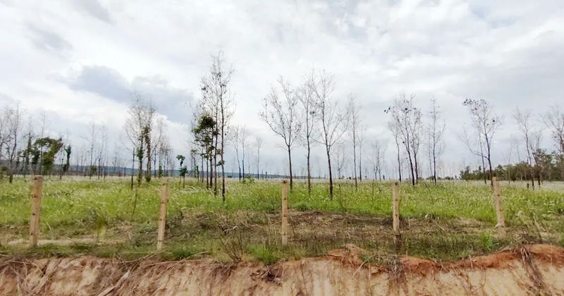
🔥
🔥
🔥
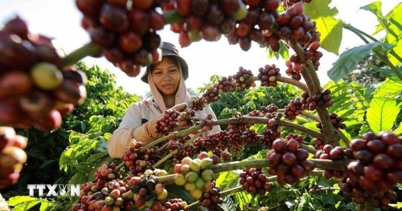
🔥
🔥
🔥
🔥
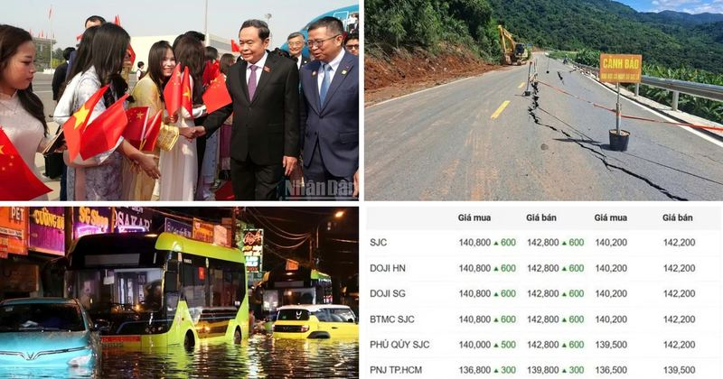
⚡Tin nổi bật ngày 11/10: Chủ tịch Quốc hội Trần Thanh Mẫn bắt đầu thăm chính thức Trung Quốc; Vàng miếng, vàng nhẫn đồng loạt tăng mạnh trở lại
Chủ tịch Quốc hội Trần Thanh Mẫn bắt đầu thăm chính thức Trung Quốc Khoảng 11 giờ 25 phút trưa 11/10 (giờ địa phương), Chủ tịch Quốc hội Trần Thanh Mẫn và Đoàn đại biểu cấp cao Việt Nam đến thủ đô Bắc Kinh, bắt đầu chuyế
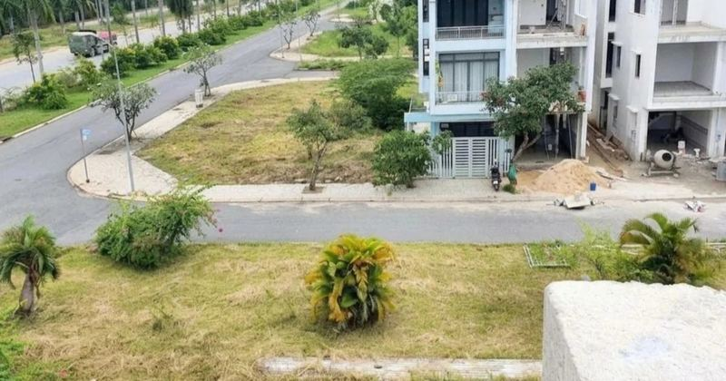
⚡ ⚡
⚡
🔥
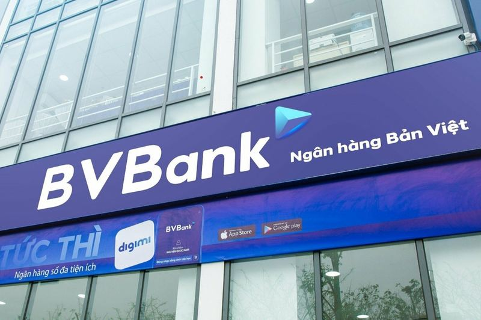
🔥Tài chính doanh nghiệp 24/7: Saigontel mở rộng dịch vụ viễn thông, THACO thúc đẩy hợp tác công nghệ đường sắt
Bản tin Tài chính doanh nghiệp 24/7 ngày 11/10 ghi nhận những chuyển động đáng chú ý trong hoạt động đầu tư, mở rộng kinh doanh và tăng vốn của doanh nghiệp. Nổi bật là Saigontel tham gia phân phối dịch vụ Starlink, THAC
🔥
Giá xăng dầu hôm nay 11/10: Thế giới trải qua tuần tăng, trong nước trái chiều
Giá dầu thế giới hôm nay Giá dầu quốc tế trong tuần này trải qua một tuần đầy biến động với 3 phiên tăng và 2 phiên giảm. Cụ thể, trong phiên giao dịch đầu tuần này (5/10), giá dầu thế giới giảm gần 2%, trong bối cảnh kh
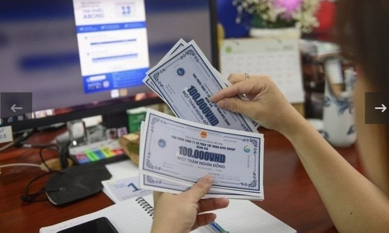
🔥
🔥
Tiến sĩ người Việt Lê Viết Quốc cùng 3 “bộ não” rời Google lập công ty: Khi ra mắt còn chưa thuê văn phòng, chỉ 37 ngày sau đã nhắm định giá 50 tỷ USD
TIN MỚI Ngày 5/8/2026, bốn nhà khoa học hàng đầu của Google gồm Jeff Dean, Sanjay Ghemawat, Oriol Vinyals và Lê Viết Quốc (Quoc Le) đồng loạt rời tập đoàn công nghệ Mỹ để thành lập một công ty trí tuệ nhân tạo mang tên D
⚡
Gia đình Mai Diễm Phương cầu cứu khi tro cốt cố nghệ sĩ bị trộm sau 23 năm
(Dân trí) - Tro cốt của cố nghệ sĩ Hong Kong (Trung Quốc) Mai Diễm Phương được cho là đã biến mất khỏi nơi lưu giữ tại một ngôi chùa trên đảo Đại Nhĩ Sơn. Gia đình nữ nghệ sĩ kêu gọi cộng đồng hỗ trợ tìm kiếm. Theo HK01,
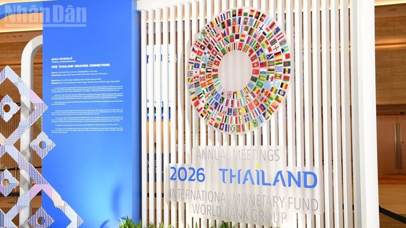
⚡
⚡
Chủ tịch Quốc hội Trần Thanh Mẫn hội kiến Chủ tịch Chính hiệp Toàn quốc Trung Quốc
Chủ tịch Quốc hội Trần Thanh Mẫn hội kiến Chủ tịch Chính hiệp Toàn quốc Trung Quốc Chủ tịch Quốc hội Trần Thanh Mẫn và Chủ tịch Chính hiệp Toàn quốc Trung Quốc hội kiến ở Bắc Kinh, nhất trí phối hợp chặt chẽ, kiểm soát v
⚡
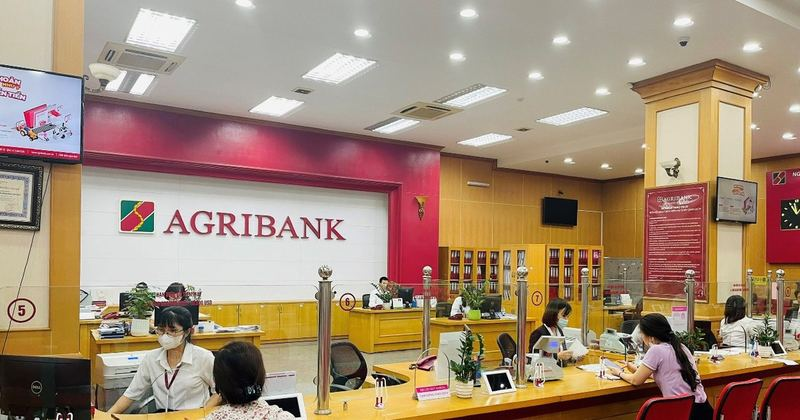
⚡So sánh lãi suất 11/10 tại Agribank, Vietcombank, BIDV, VietinBank, VPBank, MB, Techcombank, Sacombank, HDBank,...
So sánh lãi suất 11/10 tại Agribank, Vietcombank, BIDV, VietinBank, VPBank, MB, Techcombank, Sacombank, HDBank,... Theo Mạnh Đức | 11/10/2026 19:57 PM | Kinh doanh Theo dõi Cafebiz.vn trên Theo bảng lãi suất huy động ngà
⚡
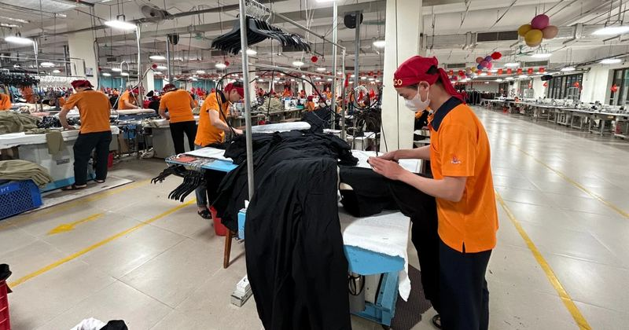
⚡
⚡
⚡
Một ngân hàng đóng cửa hàng trăm điểm giao dịch, chỉ còn hiện diện tại 7 tỉnh thành
Một ngân hàng đóng cửa hàng trăm điểm giao dịch, chỉ còn hiện diện tại 7 tỉnh thành Theo Mạnh Đức | 11/10/2026 19:33 PM | Kinh doanh Theo dõi Cafebiz.vn trên Từ quy mô gần 240 điểm giao dịch trước khi bị đưa vào diện kiể
⚡
⚡
⚡
⚡
Chủ tịch Quốc hội Trần Thanh Mẫn gặp gỡ cộng đồng kiều bào tại Trung Quốc
Facebook Twitter Lưu bài viết Bản in Copy link Theo phóng viên TTXVN tại Bắc Kinh, trong khuôn khổ chuyến thăm chính thức Trung Quốc và đồng chủ trì Phiên họp lần thứ hai Ủy ban hợp tác giữa Quốc hội Việt Nam và Nhân đại
⚡
⚡
Chủ tịch Quốc hội Trần Thanh Mẫn thăm mô hình lập pháp ở Bắc Kinh, Trung Quốc
Chủ tịch Quốc hội Trần Thanh Mẫn và lãnh đạo Nhân đại Trung Quốc trao đổi về xây dựng pháp luật, phát huy dân chủ cơ sở và tăng cường gắn kết giữa đại biểu dân cử với người dân, góp phần nâng tầm hợp tác giữa hai cơ quan
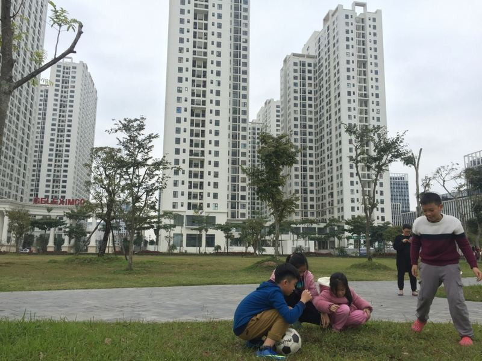
🔥Ngành xây dựng trước cơ hội tăng trưởng từ đầu tư hạ tầng và cải cách thể chế
Đầu tư hạ tầng, cải cách thể chế và tháo gỡ vướng mắc cho các dự án bất động sản đang tạo thêm cơ hội cho ngành xây dựng. Tuy nhiên, áp lực chi phí, nguồn vốn và yêu cầu nâng cao năng lực cạnh tranh vẫn là những thách th
🔥
Khi robot tung hoành chiến địa - Kỳ 2: Xe UGV xả đạn trên chiến trường Ukraine
Lính Ukraine điều khiển xe không người lái UGV mang thuốc nổ xuyên qua đống đổ nát tấn công cứ điểm quân Nga - Ảnh: X "Điều đáng chú ý trong giai đoạn 2024-2026 là xe mặt đất không người lái không chỉ được thử nghiệm mà
🔥
🔥
WHA đầu tư xây dựng khu công nghiệp tại Đà Nẵng; dự án nông nghiệp Tập đoàn HAGL được cấp phép tại Lào
Tâm điểm đầu tư tuần qua ghi nhận loạt thông tin đáng chú ý với WHA đầu tư hơn 2.700 tỷ đồng xây dựng khu công nghiệp 400 ha tại Đà Nẵng; đấu giá khu đất hơn 6,6 ha tại Khu kinh tế Cửa khẩu quốc tế Lệ Thanh; dự án nông n
🔥
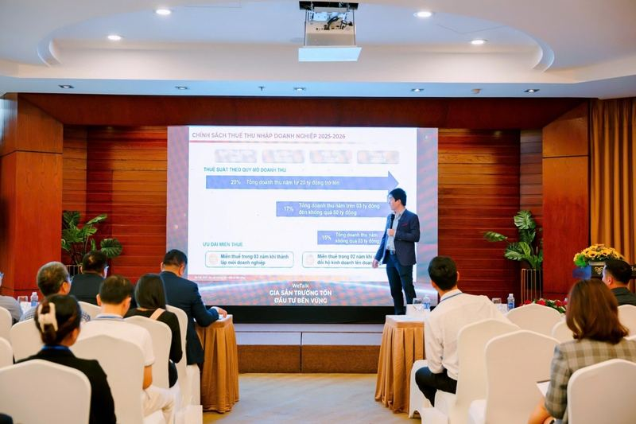
🔥
🔥
🔥
🔥
Phát hiện "viện dưỡng lão" rộng tới 1.100m²: Nấu ăn, massage, bấm huyệt đều có robot đảm nhận, đến việc đi lại cũng được hỗ trợ bằng công nghệ đặc biệt
TIN MỚI Hơn 40 mẫu robot xuất hiện trong cơ sở rộng 1.100m² Ngày 12/3/2026, một cơ sở chăm sóc người già ứng dụng công nghệ robot thông minh chính thức đi vào hoạt động tại khu phát triển kinh tế - công nghệ Bắc Kinh, Tr
⚡
⚡
🔥
Hà Nội trước cơ hội tái thiết lịch sử: Không thể phát triển tương lai bằng tư duy đô thị của quá khứ
Hà Nội trước cơ hội tái thiết lịch sử: Không thể phát triển tương lai bằng tư duy đô thị của quá khứ Theo Chí Hiệp | 11/10/2026 16:07 PM | Xã hội Theo dõi Cafebiz.vn trên Sau 18 năm mở rộng địa giới hành chính, Hà Nội đã
🔥
Hà Nội trước cơ hội tái thiết lịch sử: Không thể phát triển tương lai bằng tư duy đô thị của quá khứ
Facebook Twitter Lưu bài viết Bản in Copy link Sau 18 năm mở rộng địa giới hành chính, Hà Nội đã hình thành một không gian phát triển rộng lớn, khẳng định vị thế trung tâm đầu não chính trị - hành chính, kinh tế, văn hóa
🔥
Cảnh tượng tan hoang sau khi cơn bão xô đổ kỷ lục lịch sử 121 năm càn quét nước Mỹ: Mái nhà bị xé toạc, ít nhất 4 người thiệt mạng
Cảnh tượng tan hoang sau khi cơn bão xô đổ kỷ lục lịch sử 121 năm càn quét nước Mỹ: Mái nhà bị xé toạc, ít nhất 4 người thiệt mạng Theo Phạm Trang | 11/10/2026 14:45 PM | Xã hội Theo dõi Cafebiz.vn trên Ít nhất 4 người t
🔥
🔥
Cúi đầu dùng điện thoại nhiều giờ, nam sinh 19 tuổi bất ngờ liệt từ ngực trở xuống
Cúi đầu dùng điện thoại nhiều giờ, nam sinh 19 tuổi bất ngờ liệt từ ngực trở xuống Theo Diệp Lục | 11/10/2026 13:42 PM | Sống Theo dõi Cafebiz.vn trên Sử dụng điện thoại trong thời gian dài với tư thế cúi đầu, kết hợp th
🔥
🔥
🔥
Gia Lai siết kiểm soát giá, ngăn đầu cơ, găm hàng trong những tháng cuối năm
Facebook Twitter Lưu bài viết Bản in Copy link Nhằm tăng cường quản lý, điều hành giá trong những tháng cuối năm, Ủy ban Nhân dân tỉnh Gia Lai yêu cầu các sở, ngành và địa phương theo dõi sát diễn biến thị trường, chủ độ
🔥
🔥
Vấp phải phản ứng, ông Trump 'nói lại' về vụ phát trực tiếp cảnh xử bắn tử tù
Tổng thống Mỹ Donald Trump trao đổi với các phóng viên tại Nhà Trắng ngày 10-10 - Ảnh: NBC Theo Đài NBC News, ngày 10-10, Tổng thống Mỹ Donald Trump cho biết ông vẫn chưa đưa ra quyết định cuối cùng về việc có phát trực
🔥
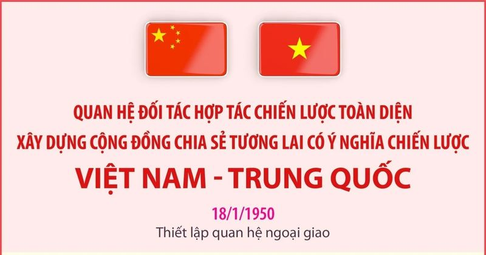
🔥Xây dựng Cộng đồng chia sẻ tương lai có ý nghĩa chiến lược Việt Nam-Trung Quốc
Facebook Twitter Lưu bài viết Bản in Copy link Nhận lời mời của Ủy viên trưởng Ủy ban thường vụ Đại hội Đại biểu nhân dân toàn quốc nước Cộng hòa nhân dân Trung Hoa Triệu Lạc Tế, Chủ tịch Quốc hội nước Cộng hòa xã hội
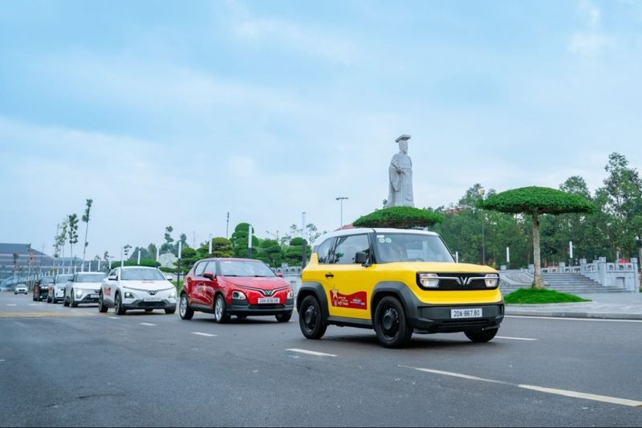
🔥
🔥
Chuyến thăm chính thức Trung Quốc của Chủ tịch Quốc hội Trần Thanh Mẫn: Củng cố tin cậy chính trị giữa hai nước Việt-Trung
Facebook Twitter Lưu bài viết Bản in Copy link Nhận lời mời của Ủy viên trưởng Ủy ban thường vụ Đại hội Đại biểu nhân dân toàn quốc nước Cộng hòa nhân dân Trung Hoa Triệu Lạc Tế, Chủ tịch Quốc hội nước Cộng hòa xã hội ch
🔥
Đưa ngoại giao nghị viện trở thành trụ cột của Cộng đồng chia sẻ tương lai Việt Nam-Trung Quốc
Đây là nội dung được Giáo sư Khúc Cường của Trường đại học Dân tộc Trung ương Trung Quốc nhấn mạnh khi trả lời phỏng vấn phóng viên Báo Nhân Dân thường trú tại Trung Quốc về mục đích, ý nghĩa chuyến thăm chính thức Trung
🔥
Lãi suất tiền gửi ngân hàng lên trên 9%, Ngân hàng Nhà nước nói tốc độ tăng đang chậm lại
TIN MỚI Nhiều ngân hàng trả lãi suất tiền gửi trên 9% Mặt bằng lãi suất tiết kiệm tiếp tục duy trì ở mức cao, với nhiều ngân hàng chào mời khách hàng mức lãi suất từ 9%/năm, thậm chí lên tới 9,4-9,6%/năm. Đáng chú ý, các
🔥
Phát hiện chuyện vô lý sau một chiếc can nhựa: CEO SN1992 từ Mỹ về Việt Nam tìm thấy cơ hội làm ăn trong ngành 4,6 tỷ USD
TIN MỚI Một can vi sinh 20 lít có giá khoảng 400.000–500.000 đồng. Nhưng để đưa sản phẩm đến những vùng nuôi tôm ở miền Tây, riêng tiền vỏ can và vận chuyển có thể ngốn gần 200.000 đồng. Nghĩa là có những trường hợp, gần
🔥
Bóc hộp mù để hồi hộp, đeo hồ lô cho yên tâm: Người trẻ Trung Quốc đang chi đậm cho những thứ không cầm được trên tay
TIN MỚI Ngày 1/10, thương hiệu đồ tập Alo của Mỹ mở không gian thực tế đầu tiên tại Trung Quốc đại lục, một cửa hàng pop-up đặt trong Trương Viên, quần thể kiến trúc cổ hơn trăm năm tuổi ở Thượng Hải. Theo Jing Daily, tầ
⚡
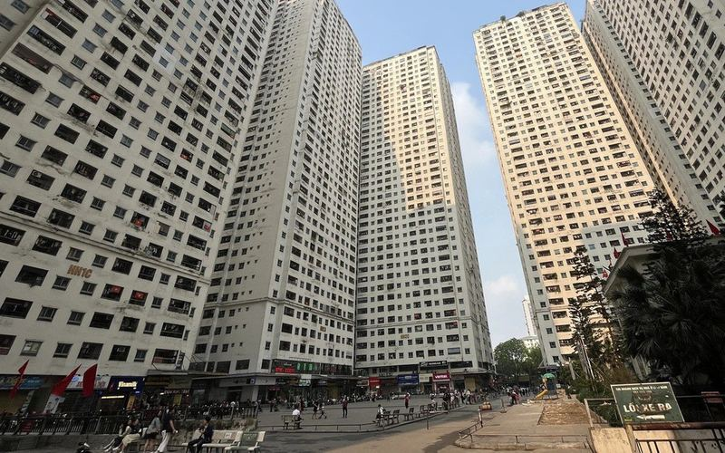
⚡12 dự án của Mường Thanh: Chỉ được xây tổng 6.759 căn hộ, thực tế tăng lên gần 25.000 căn
TIN MỚI Sở Xây dựng Hà Nội đã có báo cáo đánh giá tác động chính sách dự thảo Nghị quyết về cơ chế, chính sách đặc thù và biện pháp khắc phục hậu quả đối với các vi phạm đất đai, trật tự xây dựng tại 12 dự án liên quan đ
⚡
⚡
⚡
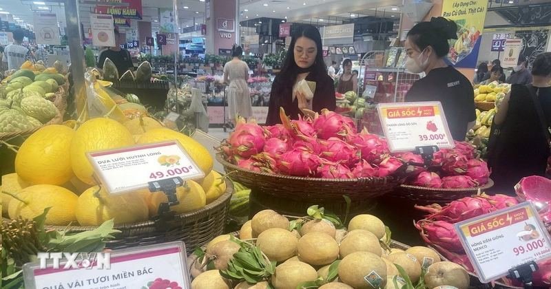
⚡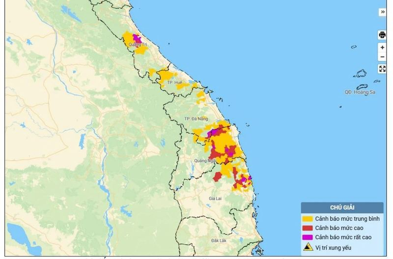
🔥
🔥
🔥
Khai mạc Đại hội Thể dục thể thao thành phố Quảng Ninh lần thứ X năm 2026
Đây là hoạt động thể thao quy mô lớn, chào mừng các ngày lễ lớn trong năm 2026; đồng thời là dịp quảng bá truyền thống lịch sử, văn hóa, con người Quảng Ninh với tinh thần “Kỷ luật và đồng tâm”, cùng những thành tựu phát
🔥
🔥
Ronaldo bị treo giò và bài toán khó nhất của mọi tổ chức: Quản trị "giai đoạn hoàng hôn" của một ngôi sao
Ronaldo bị treo giò và bài toán khó nhất của mọi tổ chức: Quản trị "giai đoạn hoàng hôn" của một ngôi sao Pa Dun | 11/10/2026 15:28 PM | Sống Theo dõi Cafebiz.vn trên Bốn trận thắng liền mà không cần Ronaldo, một lời hứa
🔥
Một ngân hàng đóng cửa hàng trăm điểm giao dịch, chỉ còn hiện diện tại 7 tỉnh thành
TIN MỚI Theo kế hoạch đã được công bố, trong tuần này, Ngân hàng TMCP Sài Gòn (SCB) chấm dứt hoạt động hai chi nhánh tại TP HCM và Đồng Nai, đồng thời dự kiến đóng thêm 1 chi nhánh trong tuần tới. Sau đợt thu hẹp mạng lư
🔥
Lần đầu tiên tổ chức Lễ hội Thể thao điện tử ngoài trời lớn nhất miền Bắc
Facebook Twitter Lưu bài viết Bản in Copy link Những năm gần đây, thể thao điện tử (Esports) tại Việt Nam từng bước phát triển theo hướng chuyên nghiệp, với sự mở rộng của cộng đồng người chơi, hệ thống giải đấu và sự th
🔥
🔥
Camera AI ở Hà Nội 'bắt lỗi' hơn 18.500 xe, có trường hợp 8 lần đi ngược chiều
Sáng 11/10, đại diện Phòng CSGT Công an TP Hà Nội cho biết, trong tháng 9, hệ thống camera AI đã ghi nhận 18.512 trường hợp vi phạm trật tự, an toàn giao thông đường bộ. Trong số đó có 16.510 trường hợp liên quan đến xe
🔥
Địa ốc tuần qua: Sôi động khởi công dự án, dòng vốn ngoại tiếp tục đổ vào bất động sản
Tuần qua, thị trường bất động sản ghi nhận nhiều dự án mới được khởi công, chấp thuận đầu tư, cùng những chuyển động đáng chú ý về dòng vốn FDI, nguồn cung nhà ở và hoạt động của doanh nghiệp. Khởi công Dự án Tổ hợp khác
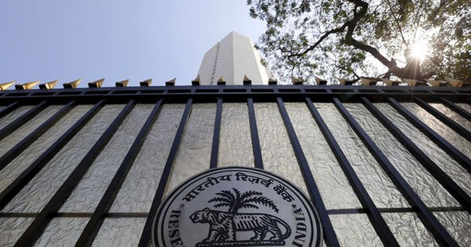
🔥
🔥
Giá vàng ngày 11/10: Bảng giá tại các công ty vàng bạc đá quý trong nước
Facebook Twitter Lưu bài viết Bản in Copy link Ngày 10/10, giá vàng SJC giữ nguyên mức niêm yết cuối ngày 9/10. Như vậy, so với đầu tuần, giá vàng SJC tăng 1,3 triệu đồng/lượng ở cả hai chiều mua vào và bán ra. Chênh lệc
🔥
🔥
🔥
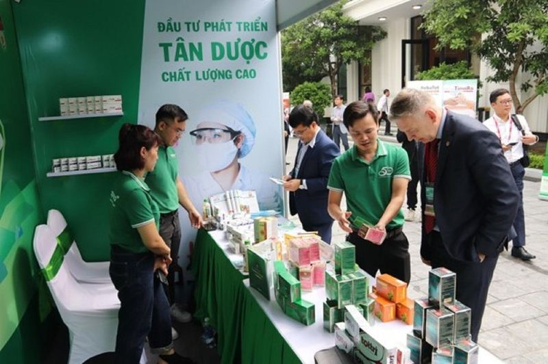
🔥
⚡
⚡
⚡
Khai trương đường bay đến Almaty và Praha, Vietjet mở thêm kết nối giữa Việt Nam và thế giới
Facebook Twitter Lưu bài viết Bản in Copy link Vietjet vừa chính thức khai trương các đường bay mới Hà Nội-Almaty, Hà Nội-Praha và Almaty-Praha, mở rộng mạng bay liên lục địa và đánh dấu hãng vươn tới Liên minh châu Âu.
⚡
Chủ tịch Quốc hội Trần Thanh Mẫn hội kiến Chủ tịch Chính hiệp toàn quốc Trung Quốc
Chủ tịch Quốc hội Trần Thanh Mẫn hội kiến Chủ tịch Chính hiệp toàn quốc Trung Quốc Vương Hộ Ninh. Ảnh: CTTĐT Quốc hội Tại cuộc hội kiến, Chủ tịch Quốc hội Trần Thanh Mẫn chuyển lời chúc mừng 77 năm Quốc khánh nước Cộng h
⚡
[Video] Dự báo thời tiết đêm nay và ngày mai 12/10/2026: Mưa thu hẹp dần tại Trung Bộ, Nam Bộ có mưa rào về chiều tối
Tại Bắc Bộ, khối không khí lạnh tăng cường lệch Đông duy trì cường độ ổn định và suy yếu chậm, trong khi đới gió Đông trên cao đã yếu đi. Vì vậy, mưa giảm rõ rệt, đêm nay chỉ còn xuất hiện ở một vài nơi. Sang ngày mai, t
 ⚡
⚡
⚡
Chủ tịch Quốc hội Trần Thanh Mẫn thăm mô hình lập pháp ở Bắc Kinh, Trung Quốc
Chiều 11/10, ngay sau khi đến Thủ đô Bắc Kinh bắt đầu chuyến thăm chính thức Trung Quốc, Chủ tịch Quốc hội Trần Thanh Mẫn và Đoàn đại biểu cấp cao Việt Nam đã thăm và khảo sát điểm liên lạc lập pháp Nam Ma Phòng ở quận T
 ⚡
⚡
⚡
⚡
Chủ tịch Quốc hội Trần Thanh Mẫn hội kiến Chủ tịch Chính hiệp Trung Quốc Vương Hộ Ninh
Tại cuộc hội kiến, Chủ tịch Quốc hội Trần Thanh Mẫn chuyển lời chúc mừng 77 năm Quốc khánh nước Cộng hòa Nhân dân Trung Hoa (01/10/1949-01/10/2026) của Tổng Bí thư, Chủ tịch nước Tô Lâm và các đồng chí lãnh đạo cấp cao V
⚡
Elon Musk: 'Công ty của tôi sẽ có giá trị gấp 100 lần nền kinh tế toàn cầu'
Elon Musk: 'Công ty của tôi sẽ có giá trị gấp 100 lần nền kinh tế toàn cầu' Theo Vu Lam | 11/10/2026 19:30 PM | Sống Theo dõi Cafebiz.vn trên Elon Musk vừa đưa ra một trong những dự báo táo bạo nhất từ trước đến nay. Elo
⚡
⚡
⚡
Đoàn đại biểu thanh niên Trung Quốc tham gia Hành trình đỏ nghiên cứu, học tập tại Việt Nam năm 2026
Ngày 11/10, tại Cửa khẩu quốc tế Hữu Nghị, tỉnh Lạng Sơn, đại diện Ủy ban Trung ương Mặt trận Tổ quốc Việt Nam phối hợp với Tỉnh Đoàn Lạng Sơn tổ chức buổi đón tiếp đoàn đại biểu thanh niên Trung Quốc sang bắt đầu chuyến
⚡
Chủ tịch Quốc hội Trần Thanh Mẫn thăm Đại sứ quán và cộng đồng người Việt Nam tại Trung Quốc
Đại sứ Việt Nam tại Trung Quốc Phạm Thanh Bình cùng cán bộ, nhân viên các cơ quan Việt Nam tại Trung Quốc, đông đảo đại diện cộng đồng người Việt Nam đang sinh sống, học tập và làm việc tại Thủ đô Bắc Kinh, Trung Quốc nh
⚡
⚡
TP.HCM ưu tiên 500.000 tỷ đồng cho hơn 250 dự án cấp bách xóa kẹt xe, ngập nước
TP.HCM ưu tiên 500.000 tỷ đồng cho hơn 250 dự án cấp bách xóa kẹt xe, ngập nước Theo Hà Linh | 11/10/2026 18:30 PM | Xã hội Theo dõi Cafebiz.vn trên Đây là vốn đầu tư công giai đoạn 2026–2030, bố trí khoảng 250 dự án cấp
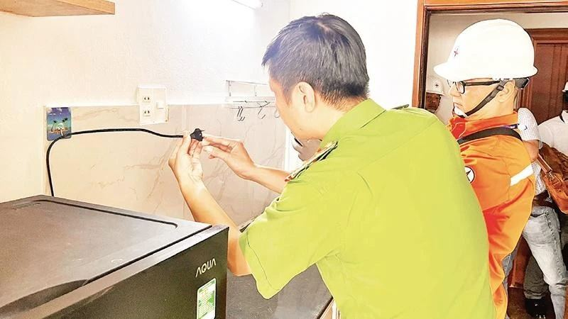
⚡
🔥
🔥
Doanh nhân Việt Nam: Từ yêu cầu tăng trưởng cao đến đổi mới mô hình phát triển
Facebook Twitter Lưu bài viết Bản in Copy link Cộng đồng doanh nghiệp đang ngày càng định hình vị thế quốc gia trên trường quốc tế. Tuy nhiên, chặng đường mới đòi hỏi nhiều hơn ở các doanh nhân Việt về sự tự tin, kiên đị
🔥
Dấu ấn kinh tế-xã hội trong chuyến thăm của Thủ tướng Lê Minh Hưng tới Lào
Facebook Twitter Lưu bài viết Bản in Copy link Theo phóng viên TTXVN tại Lào, ngày 11/10, các cơ quan truyền thông chính thức của Lào tiếp tục đăng tải nhiều bài viết ca ngợi kết quả chuyến thăm chính thức Lào từ ngày 8-
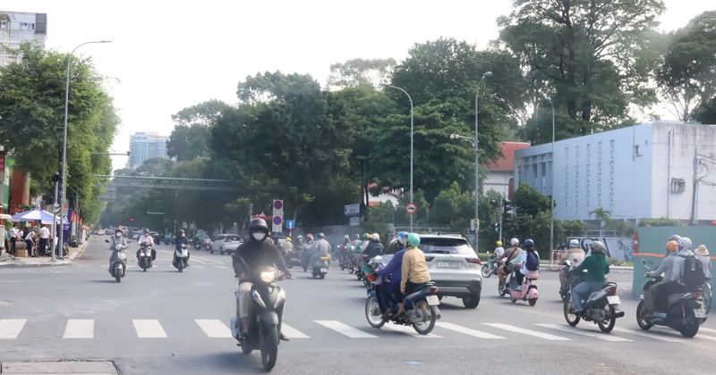
🔥Ngày thứ hai phân luồng giao thông thi công Metro số 2, người dân vẫn lúng túng
Sau hai ngày điều chỉnh giao thông phục vụ thi công tuyến Metro số 2 (Bến Thành - Tham Lương) tại khu vực trung tâm TPHCM, nhiều người dân vẫn lúng túng khi lưu thông. Đặc biệt, tại ngã tư đường Cách Mạng Tháng 8 (phường
🔥
🔥
Từng đi xuất khẩu lao động, chàng trai đi học lại, thành thủ khoa ở tuổi 27
3 năm làm việc ở Nhật và quyết định trở lại giảng đường 18 tuổi, khi nhiều bạn bè bước chân vào giảng đường đại học, Hoàng Việt Anh (sinh năm 1999, quê Phú Thọ) lại quyết định sang Nhật Bản làm thợ đúc kim loại. Việt Anh
🔥
🔥
Xử lý 18 000 căn hộ sai quy hoạch tại 12 dự án ông Lê Thanh Thản: 'Không phải hợp thức vi phạm'
TIN MỚI Hơn 18.000 căn hộ vượt quy hoạch Hà Nội bắt đầu lấy ý kiến về dự thảo nghị quyết cơ chế, chính sách đặc thù, biện pháp khắc phục hậu quả để giải quyết tồn tại vi phạm về đất đai, trật tự xây dựng gắn với tái thiế
🔥
Xử lý 18 000 căn hộ sai quy hoạch tại 12 dự án ông Lê Thanh Thản: 'Không phải hợp thức vi phạm'
Hơn 18.000 căn hộ vượt quy hoạch Hà Nội bắt đầu lấy ý kiến về dự thảo nghị quyết cơ chế, chính sách đặc thù, biện pháp khắc phục hậu quả để giải quyết tồn tại vi phạm về đất đai, trật tự xây dựng gắn với tái thiết, chỉnh
🔥
🔥
Diễn đàn Go Global Bắc Ninh 2026: Doanh nghiệp Việt tìm đường ra thị trường quốc tế
(Dân trí) - Từ thực tế doanh nghiệp gần 1.000 lao động, lãnh đạo Hòa An cho rằng nhân sự yếu là rào cản lớn khi vươn ra quốc tế, dù doanh nghiệp có nguồn vốn và công nghệ hiện đại. Bên lề Diễn đàn Go Global Bắc Ninh 2026
 🔥
🔥
🔥
Phú Thọ: Lật tẩy đường dây rửa tiền xuyên quốc gia qua "chợ đen" tài khoản ngân hàng và tài sản mã hóa
TIN MỚI Cơ quan điều tra lấy lời khai của Nguyễn Thanh Huyền (SN 1997, trú tại Hà Nội). Ảnh: Công an tỉnh Phú Thọ. Xác định đây là đường dây tội phạm công nghệ cao ẩn danh, có tính chất đặc biệt phức tạp và mang yếu tố x
🔥
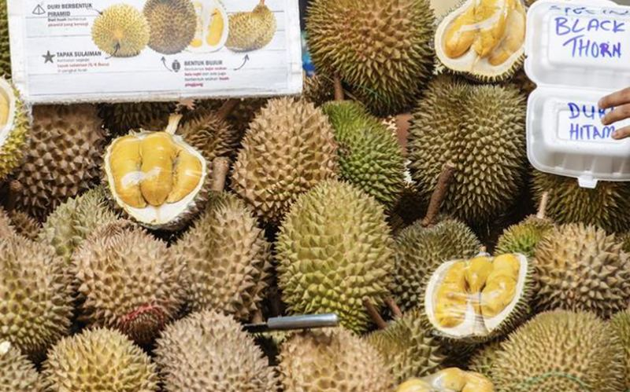
🔥
🔥
🔥
Tài khoản mạng xã hội, viễn thông, chứng khoán… phải được tích hợp VNeID
(Dân trí) - Từ nay đến 31/12, 10 loại tài khoản giao dịch điện tử được tạo trước ngày 28/9 phải được liên kết, xác thực với tài khoản định danh điện tử. Riêng tài khoản ngân hàng được kéo dài đến ngày 30/6/2027. Ngày càn
🔥
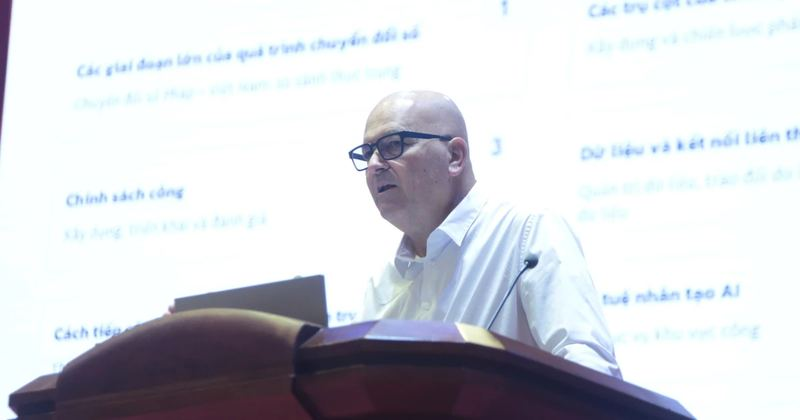
🔥
⚡
⚡
⚡
Hà Nội: Hơn 18.000 trường hợp bị phạt nguội, có phương tiện vi phạm 9 lần/tháng
Hệ thống camera AI ở Hà Nội. Ngày 11/10, Phòng CSGT Công an TP Hà Nội cho biết, trong tháng 9/2026, hệ thống camera AI của Công an TP Hà Nội đã ghi nhận 18.512 trường hợp vi phạm trật tự, an toàn giao thông đường bộ, tro
⚡
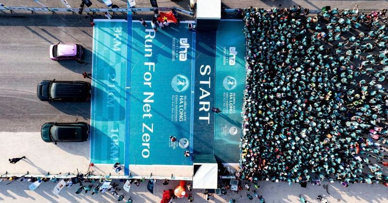
⚡Global Gate Hạ Long ESG++ Marathon 2026: Kích hoạt nhịp sống bên vịnh di sản
(Dân trí) - Giải chạy Global Gate Hạ Long ESG++ Marathon 2026 quy tụ hàng nghìn vận động viên, đưa siêu đô thị bên vịnh kỳ quan vào nhịp sôi động của một điểm đến sự kiện. Cùng kế hoạch bàn giao nhà tại Vịnh Bình Minh 1
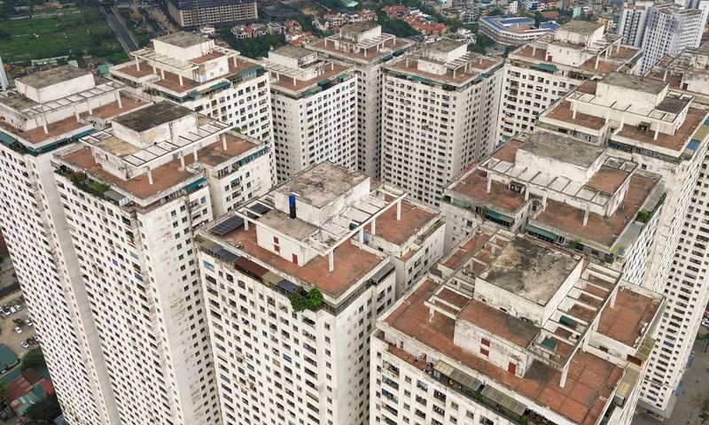
⚡Khi nào cư dân tại 12 dự án liên quan ông Lê Thanh Thản được tự làm sổ đỏ?
Khi nào cư dân tại 12 dự án liên quan ông Lê Thanh Thản được tự làm sổ đỏ? Theo Anh Văn/vtc | 11/10/2026 19:30 PM | Kinh doanh Theo dõi Cafebiz.vn trên UBND TP Hà Nội đề xuất cho phép người mua nhà tại 12 dự án vi phạm l
⚡
FDI vào Việt Nam tăng 76%, vì sao lợi nhuận các "ông chủ" khu công nghiệp lại lao dốc 40%?
KBC&SZC&BCM&D2D&VGC&GVR: Giá hiện tại Thay đổi Xem hồ sơ doanh nghiệp TIN MỚI FDI tăng mạnh, lợi nhuận chủ khu công nghiệp giảm sâu Theo báo cáo mới công bố của SSI Research, trong 9 tháng đầu năm 2026, tổng vốn FDI đăng
⚡
🔥
Huy động nguồn lực tháo gỡ "điểm nghẽn" hạ tầng giao thông ở TP Hồ Chí Minh
Cần sự kết nối đồng bộ, liên thông Phát biểu tại chương trình bà Nguyễn Trường Nhật Phượng, Phó Chủ tịch Hội đồng nhân dân thành phố cho rằng, sự kết nối đồng bộ, liên thông, hỗ trợ lẫn nhau giữa đường bộ, đường sắt, đườ
🔥
🔥
Tổng Bí thư, Chủ tịch nước gửi điện thăm hỏi về trận động đất gây thiệt hại lớn ở Panama
Một chiếc ô tô bị đè dưới đống đổ nát của một tòa nhà sập ở Penonome, Panama - Ảnh: REUTERS Được tin trận động đất ngày 9-10 làm nhiều người bị thương và gây thiệt hại lớn cho nhân dân Panama, ngày 11-10, Tổng Bí thư, Ch
🔥
🔥
🔥
🔥
Ngày mai, người dân Vĩnh Hưng bắt đầu góp ý quy hoạch dự án tái thiết đô thị 447ha của Sun Group
TIN MỚI UBND phường Vĩnh Hưng (Hà Nội) sẽ tổ chức niêm yết công khai, lấy ý kiến cộng đồng dân cư về dự thảo Quy hoạch chi tiết tỷ lệ 1/500 dự án cải tạo, chỉnh trang, tái thiết đô thị Vĩnh Hưng trong 20 ngày, từ 12/10 đ
🔥
🔥
🔥
🔥
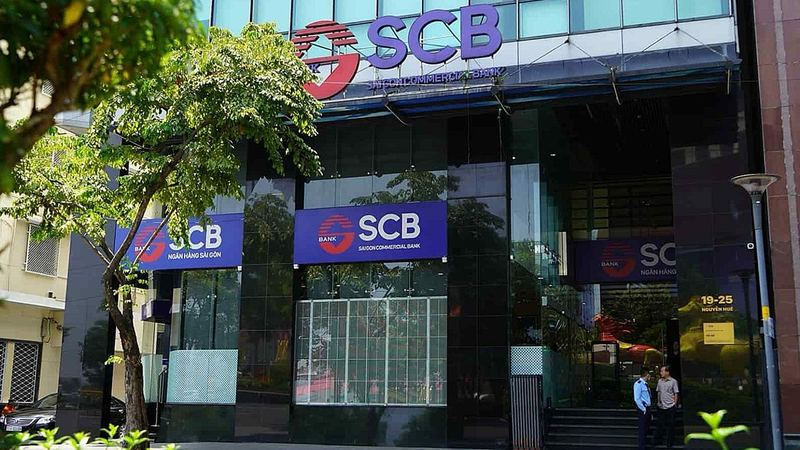
🔥
🔥
Công an Cà Mau cảnh báo thủ đoạn hứa 'lời nhanh, lãi suất cao' rồi bỏ trốn
Ngày 11.10, tin từ Công an tỉnh Cà Mau, đại tá Châu Quốc Huy, Phó giám đốc Công an tỉnh này vừa ký văn bản cảnh báo thủ đoạn phạm tội thông qua kinh doanh "quyền lợi hình thành trong tương lai" để chiếm đoạt tài sản. The
🔥
Hà Nội đề xuất cơ chế xử lý tại 12 dự án liên quan doanh nghiệp của ông Lê Thanh Thản
Theo đó, các dự án gồm CT6 Kiến Hưng, Đại Thanh, CT5 Tân Triều, Khu nhà ở Xa La, CT11 và CT12 tại khu đô thị Kim Văn - Kim Lũ; các tòa VP3, VP5, VP6 và tổ hợp HH1, HH2, HH3, HH4 tại Linh Đàm. Khu chung cư HH Linh Đàm, Hà
🔥
🔥
🔥
🔥
🔥
🔥
🔥
🔥
🔥
 🔥
🔥
🔥
Cô bé gặt đậu phộng phụ mẹ lớn lên thành mỹ nhân tuyệt sắc, màn ảnh Việt phải chao đảo theo
TIN MỚI Những ngày gần đây, Nợ Đời bất ngờ được khán giả tìm xem trở lại nhờ các đoạn trích hội thoại giữa Hai Phục do Việt Trinh thủ vai và Ba Có do Mỹ Uyên đảm nhận. Lời thoại sắc sảo, cách tung hứng ăn ý cùng diễn xuấ
🔥
Mỹ và châu Âu khuyến cáo công dân sau vụ Houthi tấn công sân bay ở Ảrập Xêút
Theo RT, Cơ quan Tổng cục Hàng không Dân dụng Ảrập Xêút (GACA) ngày 10/10 xác nhận rằng cuộc tấn công của Houthi nhắm vào sân bay King Khalid ở Riyadh đã khiến 12 người thiệt mạng và 309 người khác bị thương. "Những ngườ
🔥
🔥
🔥
🔥
🔥
Tiến sĩ người Việt Lê Viết Quốc cùng 3 “bộ não” rời Google lập công ty: Khi ra mắt còn chưa thuê văn phòng, chỉ 37 ngày sau đã nhắm định giá 50 tỷ USD
Tiến sĩ người Việt Lê Viết Quốc cùng 3 “bộ não” rời Google lập công ty: Khi ra mắt còn chưa thuê văn phòng, chỉ 37 ngày sau đã nhắm định giá 50 tỷ USD Theo Linh Lam | 11/10/2026 06:39 AM | Kinh doanh Theo dõi Cafebiz.vn
🔥
Phú Quốc trễ hẹn hơn 3.000 hồ sơ đất đai, ông Đinh Văn Nơi chỉ đạo 'nóng'
Phú Quốc trễ hẹn hơn 3.000 hồ sơ đất đai, ông Đinh Văn Nơi chỉ đạo 'nóng' Theo Nhật Huy | 11/10/2026 06:32 AM | Kinh tế vĩ mô Theo dõi Cafebiz.vn trên TPO - Phó Bí thư Tỉnh ủy An Giang- Bí thư Đảng ủy đặc khu Phú Quốc Đi
🔥
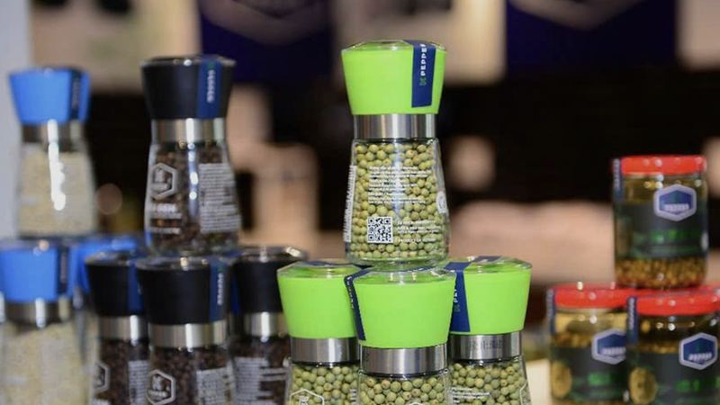
🔥
🔥
🔥
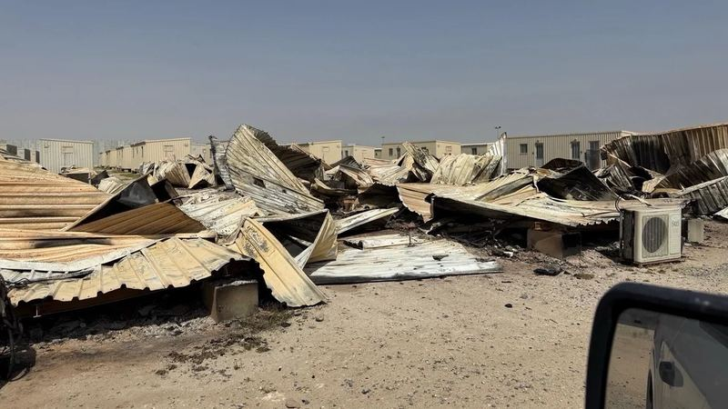
🔥
🔥
🔥
Người đẹp 30 tuổi vượt Emoura Phạm giành Miss Grand International 2026 là ai?
Tối 10/10, hoa hậu Tanzania chiến thắng mùa thi thứ 14 của Miss Grand International ở Thái Lan. Jihan Dimack vượt qua gần 80 thí sinh để nhận vương miện từ đương kim hoa hậu Emma Tiglao (Philippines). Top 5 chung cuộc gồ
🔥
⚡
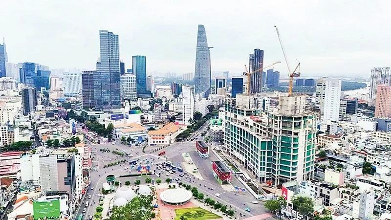
⚡
⚡
 ⚡
⚡
Tổng Giám đốc một doanh nghiệp nhận “lót tay” hàng chục tỷ đồng để ưu ái nhà cung cấp
Tổng Giám đốc một doanh nghiệp nhận “lót tay” hàng chục tỷ đồng để ưu ái nhà cung cấp Theo Dương Ngọc | 11/10/2026 19:14 PM | Kinh doanh Theo dõi Cafebiz.vn trên Theo kết luận điều tra, trong thời gian giữ chức Tổng giám
⚡
⚡
Công an xác minh clip người đàn ông chặn đầu xe, véo mũi, tát tài xế ở Hà Nội
Người đàn ông này tiến đến cửa kính ô tô, liên tục chửi bới, lăng mạ tài xế - Ảnh: D.C. Ngày 11-10, Công an xã Thuận An (Hà Nội) đang kiểm tra, xác minh đoạn clip ghi lại cảnh một người đàn ông chặn đầu ô tô, có hành vi
⚡
⚡
Doanh nhân Việt Nam trước vận hội mới: Chính sách mở đường, doanh nghiệp tạo sức bật
Nhân Ngày Doanh nhân Việt Nam 13/10, Diễn đàn “Doanh nhân tiên phong - Chính phủ kiến tạo trong kỷ nguyên mới” đặt ra yêu cầu chuyển những đột phá về thể chế thành kết quả tăng trưởng thực chất. Trong đó, Nhà nước cần ti
⚡
Tổng Giám đốc một doanh nghiệp nhận “lót tay” hàng chục tỷ đồng để ưu ái nhà cung cấp
TIN MỚI Thông tin từ An ninh thủ đô, Cơ quan Cảnh sát điều tra Bộ Công an vừa hoàn tất Kết luận điều tra bổ sung vụ án xảy ra tại Công ty TNHH Khoáng sản và luyện kim Việt Trung (Công ty Việt Trung), Tổng công ty Thép Vi
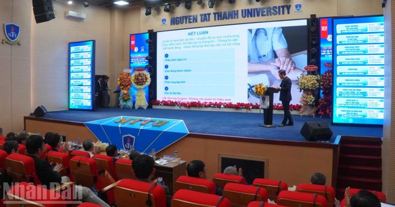
⚡
⚡
⚡
🔥
Diễn biến quan trọng tại 3 khu đô thị 1,7 tỷ USD của Sun Group ở tỉnh rộng nhất Việt Nam
TIN MỚI Chiều 8/10, Phó Bí thư Thường trực Tỉnh ủy Lâm Đồng Đặng Hồng Sỹ làm việc với lãnh đạo UBND tỉnh và các sở, ngành về tiến độ nhóm dự án động lực phía Đông. Tại buổi làm việc, các đại biểu tập trung rà soát việc t
🔥
 🔥
🔥
🔥
Lào Cai: Bắt tạm giam nguyên kế toán giả mạo chữ ký, chiếm đoạt hơn 30 tỷ đồng
Facebook Twitter Lưu bài viết Bản in Copy link Công an tỉnh Lào Cai cho biết, ngày 11/10, Cơ quan Cảnh sát điều tra Công an tỉnh Lào Cai đã ra Quyết định khởi tố vụ án hình sự, Quyết định khởi tố bị can, thi hành lệnh bắ
 🔥
🔥
🔥
🔥
🔥
🔥
Chủ tịch Quốc hội Trần Thanh Mẫn thăm mô hình lập pháp ở Bắc Kinh, Trung Quốc
Facebook Twitter Lưu bài viết Bản in Copy link Theo phóng viên TTXVN tại Bắc Kinh, chiều 11/10, ngay sau khi đến thủ đô Bắc Kinh bắt đầu chuyến thăm chính thức Trung Quốc, Chủ tịch Quốc hội Trần Thanh Mẫn và Đoàn đại biể
🔥
Ngày 'trở về' của hai anh em liệt sĩ sau gần nửa thế kỷ nằm lại nghĩa trang phía Nam
Đông đảo người dân, cựu chiến binh xã Đức Đồng tham dự lễ an táng hài cốt liệt sĩ Võ Thanh Cương và liệt sĩ Võ Huy Hạnh - Ảnh: LÊ MINH Hai anh em ruột lần lượt nhập ngũ, hy sinh khi tuổi còn rất trẻ Những ngày đầu tháng
🔥
🔥
Chủ tịch Quốc hội Trần Thanh Mẫn thăm mô hình lập pháp tiêu biểu ở Thủ đô Bắc Kinh, Trung Quốc
Tại đây, Chủ tịch Quốc hội Trần Thanh Mẫn và Đoàn đại biểu đã tham quan điểm liên lạc lập pháp cơ sở và "Ngôi nhà đại biểu Nhân đại" Nam Ma Phòng, nghe giới thiệu về mô hình hay, cách làm sáng tạo trong việc lắng nghe ý
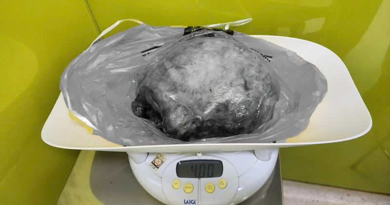
🔥
🔥
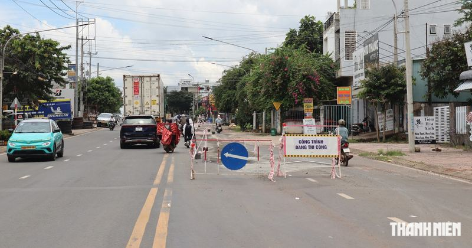
🔥'Đường tránh' Đồng Xoài đã được sửa chữa sau phản ánh của Báo Thanh Niên
Trước đó, ngày 16.9 Báo Thanh Niên đã phản ánh bài viết " Đường tránh Đồng Xoài bao giờ được sửa chữa? ". UBND phường Bình Phước, thành phố Đồng Nai sau đó đã có văn bản gửi Ban quản lý dự án đầu tư xây dựng công trình g
🔥
🔥
🔥
🔥
Tăng cường hợp tác nghị viện, tạo động lực cho quan hệ Việt Nam-Trung Quốc
Facebook Twitter Lưu bài viết Bản in Copy link Trả lời phỏng vấn phóng viên TTXVN tại Bắc Kinh nhân chuyến thăm chính thức của Chủ tịch Quốc hội Trần Thanh Mẫn tới Trung Quốc, Giáo sư Chu Chấn Minh, Viện trưởng Danh dự V
🔥
🔥
🔥
🔥
🔥
🔥
Nam ca sĩ vừa thắng lớn tại show Chông Gai: Cơ địa Quán quân, cứ đi thi là về nhất
Nam ca sĩ vừa thắng lớn tại show Chông Gai: Cơ địa Quán quân, cứ đi thi là về nhất Theo Mộc Cam | 11/10/2026 15:30 PM | Sống Theo dõi Cafebiz.vn trên Sở hữu giọng hát và khả năng sáng tác nổi bật, nam ca sĩ này liên tục
🔥
🔥
🔥
Góc nhìn chuyên gia: Cần tính kịch bản VN-Index lùi về 1.700 điểm, 4 nhóm ngành đáng chú ý trước mùa báo cáo quý
TIN MỚI Thị trường chứng khoán Việt Nam khép lại tuần giao dịch 5-9/10 với diễn biến giằng co khi VN-Index hồi phục trong hai phiên đầu tuần nhưng quay đầu giảm ba phiên liên tiếp sau đó. Chỉ số tiếp tục rung lắc quanh v
🔥
Hội nghị Trung ương 4: Đổi mới tư duy khuyến khích đảng viên làm kinh tế
Facebook Twitter Lưu bài viết Bản in Copy link Tại Hội nghị lần thứ tư Ban Chấp hành Trung ương Đảng khóa XIV (diễn ra từ ngày 5-8/10 tại Hà Nội), Ban Chấp hành Trung ương đã thông qua Quy định về đảng viên tham gia hoạt
🔥
🔥
Chủ tịch Đồng Nai yêu cầu kiểm tra, khắc phục vụ vỡ tường bao công trình
XEM CLIP: Theo đó, Chủ tịch TP Đồng Nai giao UBND phường Tam Hiệp chủ trì, phối hợp với các đơn vị liên quan kiểm tra hiện trường, yêu cầu chủ đầu tư tổ chức khắc phục sự cố, đồng thời có biện pháp bảo đảm an toàn cho cô
🔥
Ngày mai, người dân Vĩnh Hưng bắt đầu góp ý quy hoạch dự án tái thiết đô thị 447ha của Sun Group
Ngày mai, người dân Vĩnh Hưng bắt đầu góp ý quy hoạch dự án tái thiết đô thị 447ha của Sun Group Lệ Chi | 11/10/2026 12:16 PM | Kinh doanh Theo dõi Cafebiz.vn trên Từ ngày 12/10, UBND phường Vĩnh Hưng (Hà Nội) bắt đầu lấ
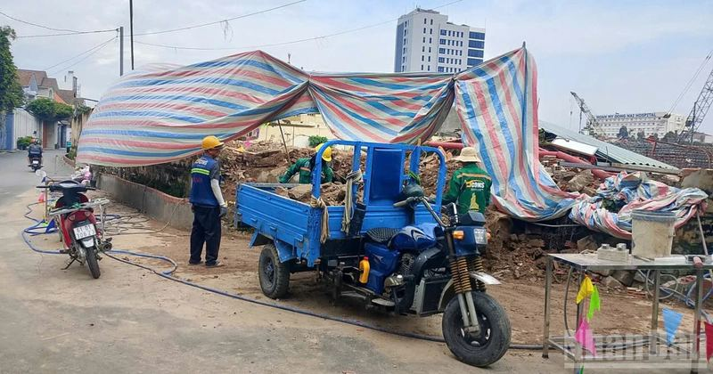
🔥Chủ tịch Đồng Nai yêu cầu khắc phục vụ vỡ tường bao dự án chung cư Bcons
Theo đó, Chủ tịch Ủy ban nhân dân thành phố Đồng Nai có văn bản số 10964/UBND-KTN ngày 10/10/2026 gửi Sở Xây dựng, Ủy ban nhân dân phường Tam Hiệp, Công ty cổ phần Đầu tư Xây dựng Bcons về việc khẩn trương kiểm tra, xử l
🔥
Camera AI ở Hà Nội: Hơn 18.500 vi phạm trong 1 tháng, 90% liên quan xe máy
Cảnh sát giám sát hệ thống camera AI tại Hà Nội - Ảnh: D.C. Ngày 11-10, Phòng Cảnh sát giao thông Công an TP Hà Nội có thông tin về việc xử lý vi phạm thông qua hệ thống camera AI trong tháng 9. Theo đó, trong tháng 9 hệ
🔥
Xử lý 18 000 căn hộ sai quy hoạch tại 12 dự án ông Lê Thanh Thản: 'Không phải hợp thức vi phạm'
Xử lý 18 000 căn hộ sai quy hoạch tại 12 dự án ông Lê Thanh Thản: 'Không phải hợp thức vi phạm' Theo Đình Phong | 11/10/2026 10:27 AM | Kinh doanh Theo dõi Cafebiz.vn trên TPO - Theo dự thảo nghị quyết của HĐND Hà Nội, v
🔥
Khoảnh khắc khách bộ hành ở Ukraine thoát chết gang tấc khi bị UAV tấn công
Theo báo Guardian, vụ việc xảy ra hôm 8/10 ở gần một trường mẫu giáo ở Sviatopetrivske. UAV sau đó gây ra vụ nổ lớn và hất tung các mảnh vỡ cùng khói bụi lên không trung. Nhà chức trách Ukraine cho biết UAV do Nga phóng
🔥
🔥
🔥
🔥
Một ca sĩ nổi tiếng bỏ hơn 100 tỷ xây nhà máy nước, sau 4 năm lỗ gần 80 tỷ: Giờ Agribank rao bán giá 52 tỷ
Một ca sĩ nổi tiếng bỏ hơn 100 tỷ xây nhà máy nước, sau 4 năm lỗ gần 80 tỷ: Giờ Agribank rao bán giá 52 tỷ Theo Linh Lam | 11/10/2026 09:08 AM | Kinh doanh Theo dõi Cafebiz.vn trên Từng bỏ khoảng 100 tỷ đồng xây dựng nhà
🔥
Giá bạc trong nước phục hồi nhẹ phiên cuối tuần, lấy lại mốc 58 triệu đồng/kg
TIN MỚI Sáng ngày 10/10 (giờ Việt Nam), giá bạc thế giới phục hồi nhẹ, đang giao dịch quanh mức 60,8 USD/ounce, tăng 0,7 USD/ounce so với cùng thời điểm sáng hôm qua (9/10). Cùng chiều diễn biến, giá vàng thế giới cũng t
🔥
🔥
🔥
🔥
🔥
Tên lửa Pechora S-125 Nga bắn hạ tiêm kích F-117 Nighthawk Mỹ tái xuất với công nghệ tối tân
Tên lửa đánh chặn PAC-3 Edge Patriot Mỹ động cơ 3 xung, ‘đặc trị’ mục tiêu siêu thanh Nga đang chuẩn bị khôi phục và đưa trở lại chiến trường dòng tên lửa phòng không huyền thoại Pechora S-125 (NATO định danh SA-3 Goa) t
🔥
Đường sắt tốc độ cao: Từ làm chủ công nghệ đến xây dựng năng lực công nghiệp đường sắt
Đường sắt tốc độ cao Bắc - Nam đang được chuẩn bị trên một quy mô đặc biệt lớn với tổng mức đầu tư trên 1,7 triệu tỷ đồng Đường sắt tốc độ cao Bắc - Nam đang được chuẩn bị trên một quy mô đặc biệt lớn. Tuyến đường dài kh
🔥
iPhone 18 Pro giá gần 39 triệu tại Việt Nam tưởng đã đắt, nhưng có nơi phải trả gần gấp đôi: Việt Nam thực tế đứng thứ mấy thế giới?
TIN MỚI Theo bảng thống kê mới được Visual Capitalist công bố, giá bán của iPhone 18 Pro phiên bản 256GB được so sánh tại 35 thị trường, dựa trên mức giá niêm yết của Apple và quy đổi sang USD theo tỷ giá ngày 28/9/2026.
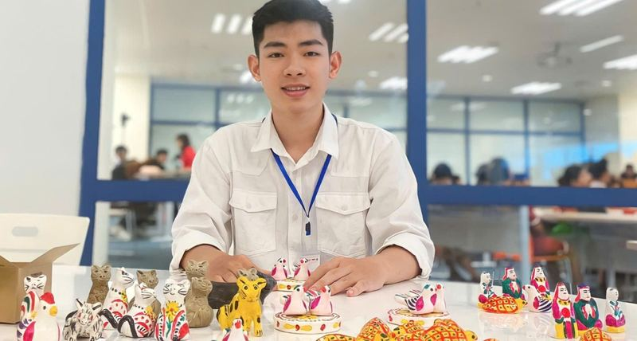
🔥Sợ nghề xưa thất truyền, chàng trai Bắc Ninh bỏ việc về nặn phỗng đất với ông nội
Nghề gia truyền vùng Kinh Bắc Phùng Đình Đạt nặn phỗng đất tại nhà Lọt thỏm giữa những hộ dân có nghề làm vàng mã tại phường Thuận Thành (TP Bắc Ninh ), trong ngôi nhà nhỏ, Phùng Đình Đạt (SN 2002) cần mẫn nặn từng viên
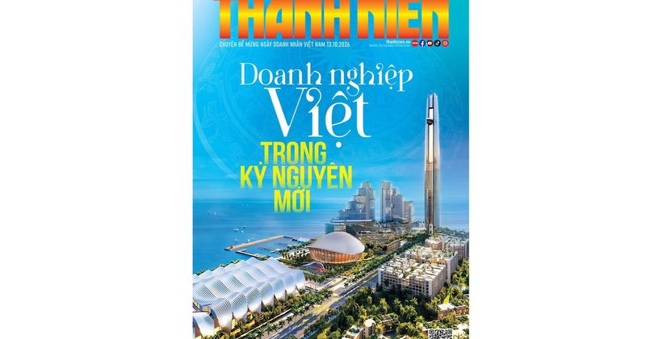
🔥Ấn phẩm đặc biệt chào mừng Ngày Doanh nhân Việt Nam 13.10.2026: Doanh nghiệp Việt trong kỷ nguyên mới
Khi chúng tôi đặt câu hỏi: Nếu Việt Nam đặt mục tiêu trở thành một nước phát triển vào năm 2045, doanh nghiệp Việt Nam hôm nay phải lớn đến đâu, mạnh đến đâu và có tầm nhìn xa đến đâu? Với câu hỏi này, mỗi người, tùy lĩn
🔥
🔥
Khuyến khích đảng viên làm giàu chính đáng là bước chuyển mạnh mẽ về tư duy phát triển
Tại Hội nghị Trung ương 4, Ban Chấp hành Trung ương Đảng đã thống nhất cao quan điểm cần đổi mới mạnh mẽ tư duy về đảng viên tham gia đầu tư, kinh doanh, từ "cho phép" sang "khuyến khích, tạo điều kiện" để đảng viên làm
⚡
Lựa chọn nào với cư dân 'khu chung cư vạn dân' HH Linh Đàm nếu phải di dời?
Lựa chọn nào với cư dân 'khu chung cư vạn dân' HH Linh Đàm nếu phải di dời? Theo Đình Phong | 11/10/2026 21:00 PM | Kinh doanh Theo dõi Cafebiz.vn trên TPO - Dự thảo nghị quyết của HĐND TP Hà Nội về cơ chế đặc thù xử lý
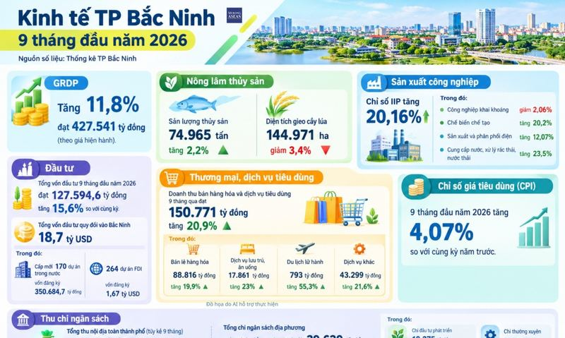
⚡
⚡
Triều cường dâng cao gây ngập sâu nhiều tuyến đường tại Thành phố Hồ Chí Minh
Facebook Twitter Lưu bài viết Bản in Copy link Chiều 11/10, triều cường dâng cao gây ngập sâu nhiều tuyến đường khu vực phía Nam Thành phố Hồ Chí Minh, khiến hàng loạt xe máy chết máy, người dân chật vật di chuyển, nhiều
 ⚡
⚡
⚡
⚡
Lễ hội đông vui hóa tang thương: 2 người chết dưới bánh xe rước 4 tấn tại Nhật Bản
Lễ hội đông vui hóa tang thương: 2 người chết dưới bánh xe rước 4 tấn tại Nhật Bản Minh Ngọc | 11/10/2026 20:02 PM | Sống Theo dõi Cafebiz.vn trên Hai người đàn ông thiệt mạng, 16 người bị thương trong hai vụ tai nạn liê
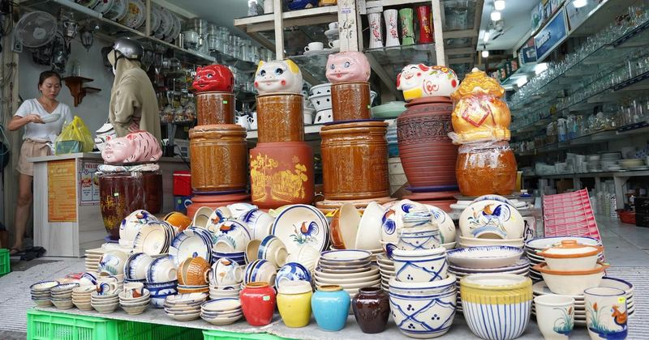
⚡
⚡
⚡
⚡
Cần Thơ diễn tập chữa cháy, cứu nạn tại Công ty Xổ số kiến thiết Sóc Trăng
Ngày 10/10, lực lượng Cảnh sát Phòng cháy chữa cháy và cứu nạn, cứu hộ (PCCC-CNCH) Công an TP. Cần Thơ tổ chức thực tập phương án chữa cháy, cứu nạn, cứu hộ tại Công ty TNHH MTV Xổ số kiến thiết Sóc Trăng, với tình huống
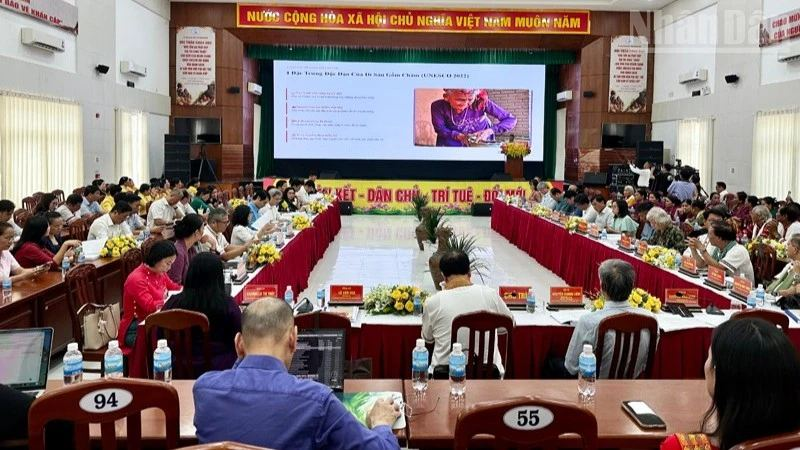
⚡
⚡
⚡
⚡
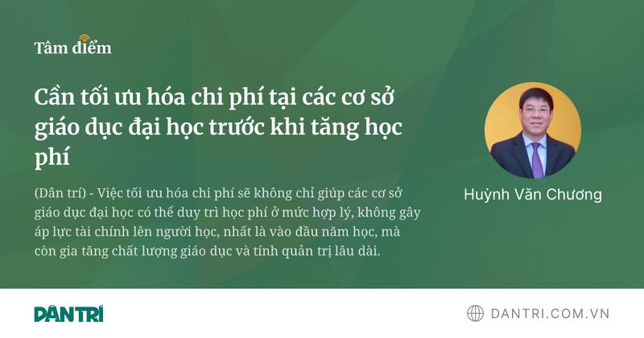
⚡Cần tối ưu hóa chi phí tại các cơ sở giáo dục đại học trước khi tăng học phí
Trong bối cảnh các cơ sở giáo dục đại học (CSGDĐH) công lập đang trong quá trình sắp xếp, tinh gọn, giảm tầng nấc trung gian để vừa đạt chuẩn cơ sở giáo dục, vừa nâng cao chất lượng, hiệu quả, thì một nhiệm vụ cũng rất c
⚡
Phó Bí thư Thành ủy TPHCM Nguyễn Phước Lộc: Trường học đổi mới quản trị dựa trên dữ liệu
Hội nghị Hiệu trưởng các trường THPT, Giám đốc các trung tâm GDNN - GDTX năm 2026 do Sở GD-ĐT TPHCM tổ chức trong hai ngày 10 và 11-10 Đồng chí Nguyễn Phước Lộc, Ủy viên Trung ương Đảng, Phó Bí thư Thành ủy TPHCM, Chủ tị
⚡
⚡
⚡
Truyền thông Campuchia phản ánh đậm nét về chuyến thăm của Thủ tướng Lê Minh Hưng
Thông tấn xã Campuchia (AKP) đăng tải toàn văn thông cáo báo chí của Bộ Ngoại giao và Hợp tác quốc tế Campuchia, trong đó nhấn mạnh các kết quả nổi bật trong chuyến thăm xứ sở Chùa Tháp của Thủ tướng Lê Minh Hưng và Đoàn
⚡
Vợ chồng cựu Tổng thống Hàn Quốc ngồi tù vẫn nhận số tiền gấp 8 lần lương tổng thống
Vợ chồng cựu Tổng thống Hàn Quốc ngồi tù vẫn nhận số tiền gấp 8 lần lương tổng thống Theo Minh Hạnh | 11/10/2026 18:47 PM | Xã hội Theo dõi Cafebiz.vn trên Cựu Tổng thống Hàn Quốc Yoon Suk Yeol và vợ - bà Kim Keon Hee -
⚡
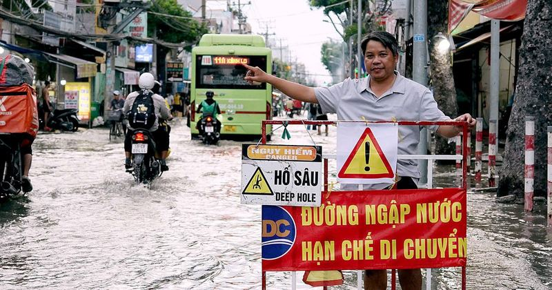
⚡
⚡
⚡
Bệnh ung thư phổ biến nhất ở phụ nữ có thể phòng ngừa và điều trị hiệu quả
Ung thư vú phổ biến thứ hai trên thế giới Ung thư vú hiện là loại ung thư phổ biến thứ hai trên thế giới và đứng đầu trong số các bệnh ung thư ở phụ nữ. Đáng chú ý, ung thư vú cũng là nguyên nhân gây tử vong do ung thư h
⚡
Nhật Bản 4 năm liên tiếp được bình chọn là quốc gia hấp dẫn nhất thế giới
Facebook Twitter Lưu bài viết Bản in Copy link Nhật Bản tiếp tục được độc giả tạp chí Condé Nast Traveler phiên bản Mỹ bình chọn là quốc gia hấp dẫn nhất thế giới năm thứ tư liên tiếp, trong bối cảnh lượng khách quốc tế
⚡
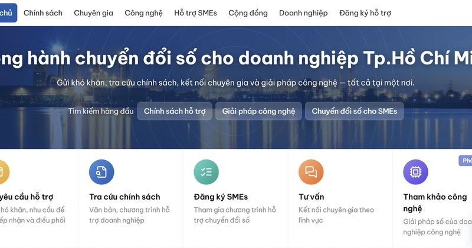
TP Hồ Chí Minh khơi thông nguồn lực, hướng tới 200.000 lượt SME chuyển đổi số
Facebook Twitter Lưu bài viết Bản in Copy link Thành phố Hồ Chí Minh đặt mục tiêu đến năm 2030 có khoảng 150.000-200.000 lượt doanh nghiệp nhỏ và vừa (SME) tiếp cận các chính sách hỗ trợ chuyển đổi số, trong đó có 100.00
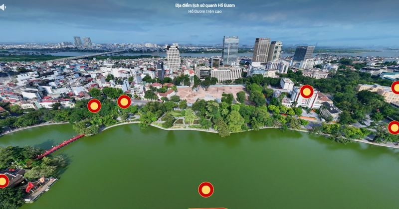
Nguyên kế toán ban quản lý dự án làm giả hồ sơ, chiếm đoạt hơn 30 tỷ đồng
TIN MỚI Ngày 11/10, Cơ quan Cảnh sát điều tra Công an tỉnh Lào Cai cho biết, đơn vị đã ra quyết định khởi tố vụ án, khởi tố bị can và thi hành lệnh bắt bị can để tạm giam đối với Đặng Thị Lý (SN 1981), nguyên kế toán Ban
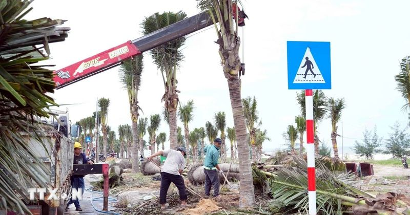
Quảng Trị tổ chức lại không gian, chỉnh trang và phát triển du lịch biển
Facebook Twitter Lưu bài viết Bản in Copy link Từ chỉnh trang điểm đến, thúc đẩy đầu tư đến mở rộng kết nối và xây dựng sản phẩm văn hóa... tỉnh Quảng Trị đang chuyển từ khai thác những lợi thế sẵn có sang tổ chức lại kh
🔥
Hà Nội trước cơ hội tái thiết lịch sử:Không thể phát triển tương lai bằng tư duy đô thị của quá khứ
TIN MỚI Tuy nhiên, trong bối cảnh mới, Thủ đô đang đối diện với những giới hạn của mô hình phát triển đô thị cũ. Ùn tắc giao thông, quá tải hạ tầng, những khu dân cư xuống cấp, những quy hoạch kéo dài nhiều năm chưa thể
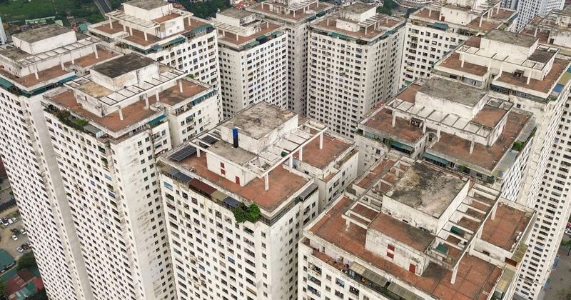
🔥Khi nào cư dân tại 12 dự án liên quan ông Lê Thanh Thản được tự làm sổ đỏ?
TIN MỚI Nội dung này được nêu trong dự thảo Nghị quyết của HĐND TP Hà Nội về cơ chế, chính sách đặc thù, biện pháp khắc phục hậu quả để giải quyết tồn tại vi phạm về đất đai, trật tự xây dựng gắn với tái thiết, chỉnh tra
🔥
🔥
🔥
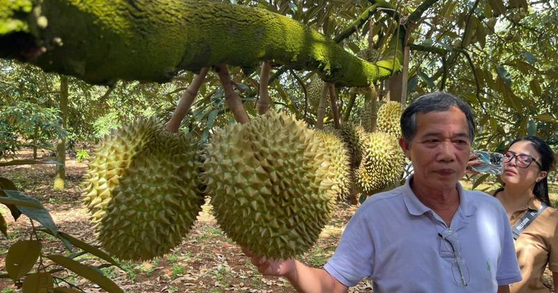
🔥
🔥
Bộ đội, dân quân thức trắng đêm dọn bùn đất, giúp dân ứng phó mưa ngập ở Đồng Nai
Ngày 11/10, Bộ Chỉ huy Quân sự TP. Đồng Nai cho biết, sau trận mưa lớn kéo dài gây ngập úng cục bộ, bùn đất tràn xuống nhiều tuyến đường, lực lượng quân sự địa phương đã khẩn trương phối hợp với chính quyền hỗ trợ người
🔥
Vụ án Khoáng sản và Luyện kim Việt Trung: Những doanh nghiệp nào khắc phục 336 tỉ?
Cựu Tổng giám đốc Công ty TNHH Khoáng sản và Luyện kim Việt Trung Bùi Thanh Bình (hàng trên, bìa trái) và một số bị can trong vụ án - Ảnh: Bộ Công an Cơ quan Cảnh sát điều tra Bộ Công an vừa hoàn tất kết
🔥
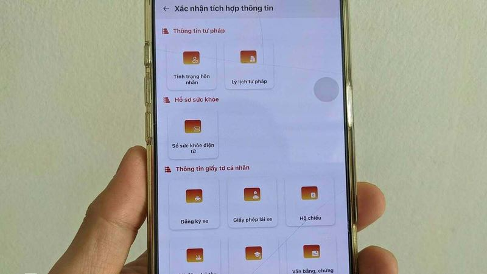
🔥Tài khoản chứng khoán, mạng xã hội, livestream bán hàng phải liên kết VNeID trước 31/12
Tài khoản chứng khoán, mạng xã hội, livestream bán hàng phải liên kết VNeID trước 31/12 Chính phủ quy định tài khoản giao dịch điện tử trên nền tảng số phục vụ hoạt động chứng khoán, viễn thông, thương mại điện tử, mạng
🔥
T
🔥
🔥
Đạo diễn Phạm Việt Phước: AI là công cụ, nhà làm phim là chủ thể sáng tạo
Thử nghiệm để “hiểu” AI * PHÓNG VIÊN: Trong bối cảnh thể loại phim ngắn AI đang có nhiều ý kiến trái chiều, Đài Phát thanh và Truyền hình TPHCM (HTV) và TFS đã gây chú ý khi công bố ứng dụng trí tuệ nhân tạo (AI) vào sản
🔥
🔥
Giá vàng hôm nay 11/10: SJC tăng 1,3 triệu/lượng, tín hiệu mới sau tuần biến động
Giá vàng thế giới hôm nay 11/10 Chỉ số tâm lý người tiêu dùng sơ bộ tháng 10 do Đại học Michigan (Mỹ) công bố giảm xuống 46,3 điểm, từ mức 48,1 điểm trong tháng 9. Kỳ vọng lạm phát trong một năm tới tăng lên 4,7%, còn kỳ
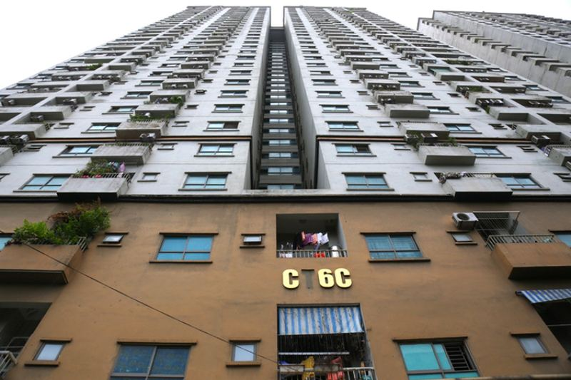
🔥Hà Nội đề xuất phương án xử lý vi phạm tại 12 dự án liên quan ông Lê Thanh Thản
TIN MỚI HĐND TP Hà Nội vừa ban hành dự thảo Nghị quyết về cơ chế, chính sách đặc thù, biện pháp khắc phục hậu quả để giải quyết tồn tại vi phạm về đất đai, trật tự xây dựng gắn với tái thiết, chỉnh trang đô thị tại 12 dự
🔥
Hơn 13.000 người thi tuyển nhân viên soát vé xe buýt, nhận lương 9 triệu đồng/tháng, độ khó của đề thi được ví như "kỳ thi tàn khốc nhất thế giới, tỷ lệ chọi 1:1200"
TIN MỚI Hơn 13.000 người tranh suất việc làm, đề thi có loạt câu hỏi hóc búa Ngày 28/9/2026 vừa qua, hơn 13.000 người đã tham gia kỳ thi tuyển nhân viên soát vé xe buýt tại thành phố Mumbai, Ấn Độ. Đây là đợt tuyển dụng
🔥
Việt Nam lần đầu đạt mức tín nhiệm đầu tư, thêm cơ hội huy động vốn cho tăng trưởng
Việc R&I lần đầu đưa Việt Nam vào nhóm xếp hạng tín nhiệm đầu tư được kỳ vọng mở thêm cơ hội tiếp cận nguồn vốn quốc tế, giảm chi phí huy động vốn và phát triển thị trường tài chính. Việt Nam được nâng xếp hạng tín nhiệm
🔥
[Video] Tài khoản chứng khoán, viễn thông, mạng xã hội phải liên kết VNeID trước ngày 31/12
Cụ thể, tài khoản giao dịch điện tử thuộc 11 lĩnh vực gồm giáo dục, bình dân học vụ số, chứng khoán, viễn thông, thương mại điện tử, hóa đơn điện tử, kinh doanh vận tải, du lịch, dược, khám bệnh, chữa bệnh và mạng xã hội
🔥
🔥
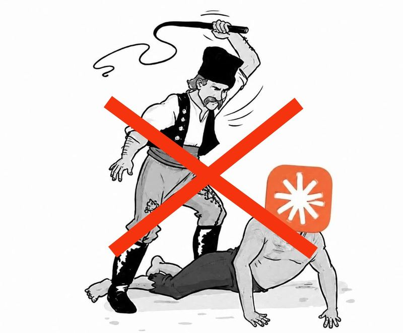
🔥"Ngưng ngược đãi AI": Anthropic bất ngờ cấm hành vi bạo lực, tàn nhẫn vô cớ với AI Claude
TIN MỚI Trong bản cập nhật Điều khoản Sử dụng (Usage Policy) mới nhất, Anthropic - công ty trí tuệ nhân tạo đứng sau dòng mô hình Claude đình đám đã bổ sung một quy định khiến cả giới công nghệ lẫn cộng đồng mạng phải xô
🔥
Hà Nội dự kiến giải pháp xử lý công trình vi phạm thuộc dự án của doanh nghiệp ông Lê Thanh Thản
Dự án tổ hợp chung cư HH Linh Đàm - Ảnh: NAM TRẦN HĐND TP Hà Nội vừa có dự thảo nghị quyết về cơ chế, chính sách đặc thù và biện pháp khắc phục hậu quả nhằm giải quyết các tồn tại, vi phạm về đất đai, trật tự xây dựng tạ
🔥
🔥
🔥
3 ưu thế vượt trội giúp vệ tinh Rassvet Nga 'lật kèo' Starlink của Elon Musk
Vệ tinh Rassvet của Nga - câu trả lời dành cho Starlink của Mỹ. Ảnh: xnk/Shutterstock/Fotodom/kp.ru Nga đang triển khai hệ thống vệ tinh quỹ đạo thấp mang tên Rassvet , do công ty Bureau 1440 phát triển, với tham vọng tr
🔥
Kỹ sư 35 tuổi ngồi miệt mài cả ở nhà và công ty, thận bị ảnh hưởng ra sao?
Bác sĩ cho rằng thói quen ngồi làm việc nhiều giờ, sau đó nằm dài trên sofa xem phim và chơi điện tử có liên quan đến tình trạng suy giảm chức năng thận của người này. Ngồi hơn 12 tiếng mỗi ngày, thận tổn thương Theo Chi
🔥
🔥
Một tập đoàn Việt Nam đãi ngộ đặc biệt cho nhân sự là Tiến sĩ: Thu nhập tối thiểu 500 triệu/năm, hỗ trợ khi mua nhà 2 tỷ, ô tô 1 tỷ
FPT: Giá hiện tại Thay đổi Xem hồ sơ doanh nghiệp TIN MỚI Khối Giáo dục FPT (FPT Education), thuộc Tập đoàn FPT do ông Trương Gia Bình làm Chủ tịch HĐQT, đã triển khai chính sách đãi ngộ đặc biệt nhằm thu hút đội ngũ giả
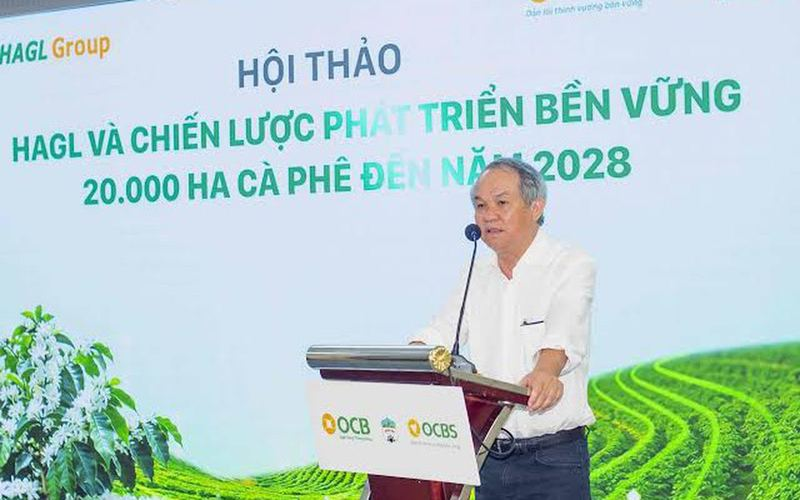
🔥Dự án hơn 2.000 ha của Bầu Đức vừa được cấp phép tại Lào, chuẩn bị xây nhà máy gần 10.000 tấn/năm đón đầu thị trường tiêu thụ gần 30.000 tấn mỗi ngày
HAG: Giá hiện tại Thay đổi Xem hồ sơ doanh nghiệp TIN MỚI Chiều 8/10, tại Hội nghị xúc tiến đầu tư Việt Nam – Lào 2026 diễn ra ở thủ đô Viêng Chăn, Bộ trưởng Bộ Tài chính Việt Nam Ngô Văn Tuấn đã trao Giấy chứng nhận đăn
⚡
Bắc Ninh phê duyệt phương án đấu giá đất làm khu nhà ở tại thôn Nội Viên
Bắc Ninh phê duyệt phương án đấu giá đất làm khu nhà ở tại thôn Nội Viên Theo Hà Ly | 11/10/2026 20:46 PM | Kinh doanh Theo dõi Cafebiz.vn trên Bắc Ninh phê duyệt phương án đấu giá đất để thực hiện dự án khu nhà ở tại th
⚡
FDI vào Việt Nam tăng 76%, vì sao lợi nhuận các "ông chủ" khu công nghiệp lại lao dốc 40%?
FDI vào Việt Nam tăng 76%, vì sao lợi nhuận các "ông chủ" khu công nghiệp lại lao dốc 40%? Theo Linh Linh | 11/10/2026 20:15 PM | Kinh doanh Theo dõi Cafebiz.vn trên Vốn FDI đăng ký tăng hơn 76% trong 9 tháng đầu năm 202
⚡
Danh tính nam tài xế lái ô tô kéo lê khung sắt, tấm tôn trên đường ở Quảng Ninh
Ngày 11/10, Đội CSGT đường bộ số 2 (Phòng CSGT Công an TP Quảng Ninh) cho biết, từ phản ánh của người dân, đơn vị đã xác minh, làm rõ và xử lý tài xế điều khiển ô tô kéo theo đồ vật trên đường. CSGT làm việc với anh B.Đ.
⚡
⚡
Công an vào cuộc vụ người đàn ông chặn đầu ô tô, véo mũi, tát tài xế ở Hà Nội
Ngày 11/10, mạng xã hội lan truyền đoạn clip ghi lại cảnh một người đàn ông đi xe máy chặn đầu ô tô, chửi bới, lăng mạ và hành hung tài xế. Hình ảnh về vụ việc. Ảnh cắt từ clip Theo thông tin được chia sẻ, khoảng 8h35 cù
⚡
⚡
Bắc Ninh phê duyệt phương án đấu giá đất làm khu nhà ở tại thôn Nội Viên
TIN MỚI Tại Quyết định số 2741/QĐ-UBND ngày 7/10/2026, UBND TP Bắc Ninh phê duyệt phương án đấu giá quyền sử dụng đất để thực hiện dự án đầu tư xây dựng Khu nhà ở tại thôn Nội Viên, xã Tân Chi (trước thuộc huyện Tiên Du)
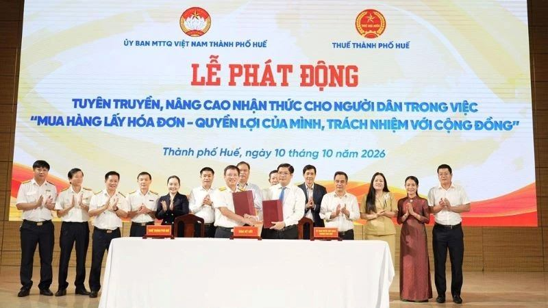
⚡
⚡
⚡
Ô tô kéo lê khung sắt, tấm tôn trên đường: Thông tin bất ngờ về danh tính chủ xe
Ô tô kéo lê khung sắt, tấm tôn trên đường: Thông tin bất ngờ về danh tính chủ xe Theo Hương Trà (T/H) | 11/10/2026 18:31 PM | Xã hội Theo dõi Cafebiz.vn trên Người chứng kiến và quay clip cho biết sự việc xảy ra vào khoả
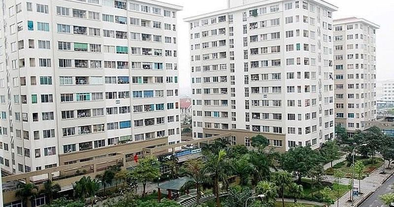
⚡
⚡
Tuổi Trẻ Startup Award: Omedic tìm cách kết nối các bước chăm sóc sức khỏe
Ông Lê Văn Năng - nhà sáng lập Omedic - cho biết Omedic chọn phát triển mô hình sàn kết nối nhiều bên, hướng đến giúp người dùng thực hiện các bước này thuận tiện hơn - Ảnh: DUYÊN PHAN Tuy nhiên, bài toán kiểm soát chất
Trao giải thiết kế dự án Bệnh viện Đa khoa Thực hành 500 giường, vốn đầu tư 4.700 tỷ đồng
Phối cảnh dự án Bệnh viện đa khoa thực hành 500 giường. QUANG HUY Phát biểu tại buổi lễ, ông Võ Đức Thanh, Giám đốc Ban Quản lý dự án Đầu tư xây dựng các công trình dân dụng và công nghiệp TPHCM cho biết, dự án có tổng v
🔥
🔥
🔥
Thủ tướng Lê Minh Hưng thăm chính thức Campuchia: Củng cố tin cậy, nâng tầm hợp tác
Facebook Twitter Lưu bài viết Bản in Copy link Chuyến thăm chính thức Campuchia từ ngày 9-10/10 của Thủ tướng Lê Minh Hưng là hoạt động đối ngoại quan trọng, khẳng định sự coi trọng và ưu tiên cao của Đảng, Nhà nước và C
🔥
🔥
🔥
CA điều tra 117 tỷ đồng chuyển vào 3 tài khoản ngân hàng: Khám xét, khởi tố nhiều đối tượng
CA điều tra 117 tỷ đồng chuyển vào 3 tài khoản ngân hàng: Khám xét, khởi tố nhiều đối tượng Theo Chi Chi | 11/10/2026 14:11 PM | Xã hội Theo dõi Cafebiz.vn trên Ngoài Nguyễn Thanh Huyền SN 1997, công an còn khởi tố 6 đối
🔥
🔥
🔥
🔥
🔥
🔥
🔥
Bill Gates: Chi 1-2 USD tránh 'vệt mây' sau đuôi máy bay giúp giảm 1 tấn CO2
Bill Gates: Chi 1-2 USD tránh 'vệt mây' sau đuôi máy bay giúp giảm 1 tấn CO2 Nhiều máy bay để lại "vệt mây" sau di chuyển, hấp thụ nhiệt và làm nóng Trái Đất, chi phí tránh hiện tượng này chỉ tốn 1-2 USD cho mỗi tấn CO2.
🔥
🔥
🔥
🔥
🔥
🔥
Chủ tịch Quốc hội Trần Thanh Mẫn đến thủ đô Bắc Kinh, bắt đầu thăm chính thức Trung Quốc
Đón đoàn tại Sân bay quốc tế thủ đô Bắc Kinh, về phía Trung Quốc, có các đồng chí Vương Đông Minh, Ủy viên Trung ương Đảng, Phó Ủy viên trưởng Ủy ban Thường vụ Nhân đại toàn quốc Trung Quốc; Tống Nhuệ, Phó Tổng Thư ký Ủy
🔥
🔥
🔥
Chàng trai gây choáng khi chi gần 3 tỉ đồng sở hữu các vật phẩm của Messi
Bộ sưu tập "khủng" Bộ sưu tập được chàng trai gen Z miền Tây miệt mài gom góp trong suốt 12 năm. Mới đây, khi Messi có trận đấu chia tay đội tuyển quốc gia Argentina, Mai Đỗ Vy Phát (23 tuổi), ngụ tại P.Tịnh Biên, tỉnh A
🔥
Sân bay Saudi Arabia bị tấn công, 12 người thiệt mạng, 309 người bị thương
Khói bốc lên từ sân bay quốc tế King Khalid (Riyadh) sau đợt tập kích của Houthi ngày 10-10. Ảnh: OSINTWARFARE Tân Hoa xã đưa tin, hoạt động khai thác tại sân bay tạm thời đình chỉ sau vụ tấn công từ ngày 10-10, để phục
🔥
🔥
🔥
🔥
🔥
Hướng dẫn mới nhất về sử dụng sổ bảo hiểm xã hội, thẻ bảo hiểm y tế điện tử
Sổ bảo hiểm xã hội điện tử, thẻ bảo hiểm y tế điện tử trên ứng dụng VssID. Ảnh minh họa Bảo hiểm xã hội (BHXH) TP Hà Nội vừa có hướng dẫn việc nhận và sử dụng sổ BHXH, thẻ bảo hiểm y tế (BHYT) điện tử theo quy định mới.
🔥
🔥
🔥
🔥
Dân văn phòng không mua nổi nhà Hà Nội, học lại cách "sinh tồn" khi ở thuê dài hạn: Hợp đồng, tiền rác... lơ mơ là sạch tiền!
TIN MỚI Không phải ai chưa mua được nhà cũng xem việc thuê nhà là một phương án tạm thời. Với một bộ phận người trẻ, thuê nhà có thể kéo dài vài năm, thậm chí trở thành lựa chọn lâu dài, nhưng đi kèm đó là những nguyên t
🔥
Phố gốm sứ Nguyễn Phúc Nguyên: Chủ kinh doanh cam kết đúng giá, phường giám sát
Lãnh đạo phường Nhiêu Lộc cắt băng ra mắt Tuyến phố chuyên kinh doanh gốm sứ Nguyễn Phúc Nguyên - Ảnh: LÊ PHAN Theo ông Lê Thành Quốc, Phó chủ tịch UBND phường Nhiêu Lộc , việc hình thành và phát triển các tuyến phố chuy
🔥
🔥
🔥
🔥
Triều cường sông Đồng Nai dâng cao, người dân vùng trũng lại bì bõm lội nước
Triều cường dâng cao ngập đường, người dân phường Tam Hiệp, TP Đồng Nai bì bõm lội nước đi làm - Ảnh: DUY NGUYỄN Sáng 11-10, một số khu vực trũng thấp tại phường Tam Hiệp, TP Đồng Nai ngập do triều cường, nước tràn vào n
🔥
🔥
🔥
🔥
🔥
🔥
🔥
🔥
Hồng Hạc City - Động lực gia tăng từ nội tại đến tiềm năng phát triển của toàn vùng
(Dân trí) - Trên nền tảng những chuyển dịch của Bắc Ninh, Hồng Hạc City được phát triển theo định hướng đô thị tích hợp, đặt trong mối liên kết giữa Hà Nội, Bắc Ninh và các trung tâm kinh tế lớn của miền Bắc. Tọa lạc tại
🔥
Sân bay Ả-rập Xê-út 'rung chuyển' vì bị tấn công, hơn 320 người thương vong
GACA cho biết các nạn nhân thiệt mạng bao gồm 4 công dân Ả-rập Xê-út và 8 người nước ngoài, trong đó có 2 người Bangladesh, và mỗi quốc gia Mỹ, Ai Cập, Jordan, Syria, Palestine, Sudan có một người thiệt mạng. 309 người đ
🔥
🔥
🔥
🔥
Mazda CX-5 2026 tiếp tục ra mắt Đông Nam Á, dự kiến bán ở Việt Nam cuối năm
(Dân trí) - Tại Malaysia, Mazda CX-5 thế hệ mới không được trang bị động cơ mild-hybrid như phiên bản bán tại thị trường Nhật Bản và Philippines. Mazda vừa giới thiệu CX-5 thế hệ thứ ba tại thị trường Malaysia. Xe được n
🔥
🔥
🔥
Chung kết Anh trai vượt ngàn chông gai: Quán quân Hà An Huy từng suýt bị loại
Hà An Huy (trái) và Đinh Mạnh Ninh nhận giải Chiến tướng của năm - Ảnh: NSX Tối 10-10, sau hơn 3 tháng tranh tài, Anh trai vượt ngàn chông gai 2026 chính thức lên sóng tập cuối cùng. Chương trình tìm ra 17 gương mặt góp
🔥
🔥
🔥
🔥
🔥
Sân bay thủ đô Saudi Arabia bị tấn công: 12 người chết, 309 người bị thương
Vị trí Saudi Arabia và thủ đô Riyadh - Ảnh: AP Công dân nhiều nước thiệt mạng Sáng 11-10, Hãng tin AFP dẫn thông tin từ g iới chức Saudi Arabia cập nhật: Ít nhất 12 người thiệt mạng và 309 người bị thương trong vụ tấn cô
🔥
Người đàn ông 53 tuổi tử vong sau khi chinh phục đỉnh núi cao gần 4.000m ở Mỹ
Nhân viên cứu hộ trên đường tìm người mất tích. Ảnh: Đội tìm kiếm cứu hộ Văn phòng Cảnh sát trưởng Mono Theo thông tin từ Văn phòng Cảnh sát trưởng Mono, Brian Seibert được tìm thấy đã tử vong tại núi Mount Morgan North,
🔥
🔥
🔥
🔥
🔥
Thúc đẩy quan hệ Việt Nam-Trung Quốc tiếp tục phát triển ổn định, bền vững
Nhận lời mời của Ủy viên trưởng Ủy ban thường vụ Đại hội Đại biểu nhân dân toàn quốc nước Cộng hòa Nhân dân Trung Hoa Triệu Lạc Tế, Chủ tịch Quốc hội nước Cộng hòa xã hội chủ nghĩa Việt Nam Trần Thanh Mẫn thăm chính thức
🔥
🔥
🔥
Nghiên cứu mở rộng bảo hiểm, chế độ thai sản cho lao động phi chính thức
(Dân trí) - Lãnh đạo Chính phủ đề nghị nghiên cứu mở rộng bảo hiểm tai nạn lao động và chế độ thai sản cho khu vực phi chính thức nhằm thực hiện chế độ an sinh xã hội với người yếu thế. Quyết định số 1960 của Thủ tướng v
🔥
🔥
Chung kết Anh trai chông gai: 17 anh tài ra mắt, lộ diện 2 "Chiến tướng"
(Dân trí) - "Anh trai vượt ngàn chông gai 2026" khép lại với 17 anh tài được công bố trong đội hình Gia tộc anh tài toàn năng. Hà An Huy, Đinh Mạnh Ninh cùng được vinh danh "Chiến tướng của năm". Tối 10/10, Anh trai vượt
🔥
🔥
🔥
🔥
🔥
Giám đốc kinh doanh lương 50 triệu bị cho nghỉ trái luật, đòi hơn 613 triệu, chỉ được phần nhỏ
Thu nhập 50 triệu/tháng bị chấm dứt hợp đồng lao động sau 3 tháng Ông Nguyễn Hoàng P. (TPHCM) ký hợp đồng lao động có thời hạn 1 năm với Công ty T., bắt đầu từ ngày 12/6/2022, đảm nhận vị trí giám đốc kinh doanh. Theo hợ
🔥
🔥
🔥
Hơn 5.000 người Hà Nội tìm đến Bệnh viện Bạch Mai cơ sở Ninh Bình khám chữa bệnh
Nhu cầu khám, chữa bệnh đã vượt dự tính ban đầu Sau 3 tháng vận hành, từ ngày 26/6 đến 26/9, Bệnh viện Bạch Mai cơ sở Ninh Bình đã thực hiện 151.518 lượt khám ngoại trú, tiếp nhận 12.869 lượt cấp cứu và điều trị nội trú
🔥
Chàng trai mắc hội chứng Tics trở thành nhà sáng tạo nội dung số triệu view
Xuyên suốt buổi gala trao Giải thưởng Thanh niên sống đẹp năm 2026, chốc lát mọi người lại nghe thấy những âm thanh ngắn đột ngột được phát ra không thể kiểm soát, và rồi thực sự nể phục nghị lực và tinh thần của Đinh Vi
🔥
Chuyển khoản thành công 20.920.000 đồng vào tài khoản số 206xxx ngân hàng ACB, chị Bùi Thị Hải Yến phải trình báo công an
TIN MỚI Theo thông tin từ Công an tỉnh Hưng Yên cho biết, ngày 06/10/2026 Công an phường Sơn Nam phối hợp với Công an xã Hàm Thuận Nam, tỉnh Lâm Đồng hỗ trợ một người dân nhận lại số tiền hơn 20 triệu đồng do chuyển khoả
🔥
🔥
🔥
Việt Nam vừa có thêm một "ngôi làng" đặc biệt nằm phía mũi của một hòn đảo xa bờ: Rộng 65 ha, sở hữu siêu dinh thự 16.000m2 với 8 phòng, ai thấy cũng phải choáng ngợp
TIN MỚI Đang được nhắc tới là Park Hyatt Phu Quoc, khu nghỉ dưỡng mang thương hiệu Park Hyatt đầu tiên tại Việt Nam. Sở dĩ được gọi là "ngôi làng" là bởi thiết kế của khu nghỉ. Hyatt mô tả Park Hyatt Phu Quoc được lấy cả
🔥
Tỷ phú Phạm Nhật Vượng giao 'cậu cả' Phạm Nhật Quân Anh nhiệm vụ quan trọng chinh phục thị trường Ấn Độ - 'Game' khó hay dễ?
TIN MỚI " Ấn Độ là một trong những thị trường quan trọng nhất trong câu chuyện tăng trưởng toàn cầu của VinFast", Bà Võ Thị Cẩm Tú, Giám đốc Điều hành VinFast Xe máy điện Thị trường Quốc tế cho biết trong phát biểu mới đ
🔥
🔥
🔥
⚡
Campuchia không khoan nhượng với nạn cờ bạc trực tuyến và lừa đảo qua mạng
Facebook Twitter Lưu bài viết Bản in Copy link Từ tháng 10 này, Chính phủ Campuchia duy trì chính sách nghiêm ngặt, không khoan nhượng đối với mọi hình thức cờ bạc trực tuyến bất hợp pháp, hoạt động lừa đảo qua mạng và t
Quốc tế lên án mạnh mẽ vụ tấn công vào sân bay quốc tế ở thủ đô Saudi Arabia
Facebook Twitter Lưu bài viết Bản in Copy link Ngày 11/10, Kuwait đã lên án mạnh mẽ vụ tấn công của lực lượng Houthi nhằm vào sân bay quốc tế King Khalid ở thủ đô Riyadh của Saudi Arabia, khiến 12 người thiệt mạng và kho
Công an mời tài xế ô tô kéo lê khung sắt, tấm tôn giữa đường tới làm việc
Chiếc ô tô con kéo lê khung sắt, tấm tôn trên đường Hoàng Quốc Việt, phường Bãi Cháy, TP Quảng Ninh gây xôn xao dư luận - Video: Nguyễn Hoàng Trao đổi với phóng viên Tuổi Trẻ chiều 11-10, lãnh đạo Đội Cảnh sát giao thông
Nam sinh Quảng Ngãi giành vòng nguyệt quế tuần cuối cùng của Đường lên đỉnh Olympia 26
Trận tuần 3 tháng 3 quý IV là trận thi tuần cuối cùng của Đường lên đỉnh Olympia năm thứ 26 là màn tranh tài của bốn thí sinh: Phạm Nguyễn Mỹ Linh (THPT Hồng Thái, Hà Nội), Đặng Hoàng Nhân (THPT chuyên Lê Khiết, Quảng Ng
Nhìn lại lịch sử 950 năm hình thành và phát triển của trường đại học đầu tiên
Facebook Twitter Lưu bài viết Bản in Copy link Ngày 11/10, trưng bày chuyên đề “950 năm Quốc Tử Giám Thăng Long (1076-2026)” khai mạc tại Làng Văn hóa-Du lịch các dân tộc Việt Nam (xã Đoài Phương, Hà Nội) nhằm mở rộng kh
Đưa quan hệ Campuchia-Việt Nam tiến thêm một bước theo hướng thực chất, bền vững
Thủ tướng Lê Minh Hưng và Đoàn đại biểu cấp cao Việt Nam vừa kết thúc tốt đẹp chuyến thăm chính thức Vương quốc Campuchia trong hai ngày 9 và 10/10, theo lời mời của Thủ tướng Campuchia Hun Manet. Nhân dịp này, nhà nghiê
Bắt thêm 5 người trong vụ 'Hưng Lộc' sản xuất video bạo lực triệu lượt xem
Ngày 11/10, Công an tỉnh Lào Cai cho biết Cơ quan CSĐT vừa khởi tố, bắt tạm giam thêm 5 bị can trong vụ án liên quan đến hoạt động sản xuất, đăng tải các video có nội dung bạo lực, cờ bạc trên mạng xã hội. Các bị can gồm
Triệt phá phòng điều chế ma túy ngoài đời thực như phim “Breaking Bad”, bắt giữ cựu giáo sư hóa học
Triệt phá phòng điều chế ma túy ngoài đời thực như phim “Breaking Bad”, bắt giữ cựu giáo sư hóa học Giả Hủ | 11/10/2026 15:21 PM | Xã hội Theo dõi Cafebiz.vn trên Một giáo sư hóa học đã nghỉ hưu bị cáo buộc cầm đầu hoạt
Bắt thêm 5 người vụ 'Hưng Lộc', 'Nam phập' làm phim giang hồ đăng YouTube
5 bị can vừa bị khởi tố, bắt tạm giam - Ảnh: THANH TUẤN Ngày 11-10, Công an tỉnh Lào Cai cho biết Cơ quan Cảnh sát điều tra Công an tỉnh đã ra quyết định khởi tố bị can, bắt tạm giam thêm 5 người trong vụ 'Hưng Lộc', 'Na
“80 năm - Vang mãi bản hùng ca Hà Nội”: Hành trình tự hào của người lính Thủ đô
Facebook Twitter Lưu bài viết Bản in Copy link Tám thập kỷ xây dựng, chiến đấu và trưởng thành của Lực lượng vũ trang Thủ đô được tái hiện qua những giai điệu cách mạng, hoạt cảnh và màn trình diễn nghệ thuật giàu cảm xú
Nguyên kế toán ban quản lý dự án làm giả hồ sơ, chiếm đoạt hơn 30 tỷ đồng
Ngày 11/10, Cơ quan Cảnh sát điều tra Công an tỉnh Lào Cai cho biết, đơn vị đã ra quyết định khởi tố vụ án, khởi tố bị can và thi hành lệnh bắt bị can để tạm giam đối với Đặng Thị Lý (SN 1981), nguyên kế toán Ban quản lý
Chính phủ: Nghiên cứu trách nhiệm đóng bảo hiểm xã hội cho tài xế xe công nghệ
Phó Thủ tướng Phạm Thị Thanh Trà vừa ký quyết định của Thủ tướng ban hành kế hoạch triển khai thực hiện kết luận của Tổng Bí thư, Chủ tịch nước Tô Lâm tại buổi làm việc với Đảng ủy Chính phủ và các cơ quan về tình hình t

Lựa chọn nào với cư dân 'khu chung cư vạn dân' HH Linh Đàm nếu phải di dời?
TIN MỚI Ba phương án giải quyết quyền lợi người mua nhà Tại dự thảo Nghị quyết của HĐND TP Hà Nội về cơ chế đặc thù xử lý vi phạm đất đai, trật tự xây dựng tại 12 dự án liên quan ông Lê Thanh Thản, thành phố đề xuất các
Doanh nhân mạnh tay chi tiền đấu giá tượng, mang về mới phát hiện sự thật
Theo hồ sơ vụ án, tháng 5/2023, Công ty TNHH Đấu giá tài sản công Thái Nguyên (tỉnh Sơn Tây, Trung Quốc), đơn vị được Sở Tài chính tỉnh Sơn Tây ủy quyền, tổ chức phiên đấu giá trực tuyến với một lô tài sản bị tịch thu từ
🔥
Một tập đoàn Việt Nam đãi ngộ đặc biệt cho nhân sự là Tiến sĩ: Thu nhập tối thiểu 500 triệu/năm, hỗ trợ khi mua nhà 2 tỷ, ô tô 1 tỷ
Một tập đoàn Việt Nam đãi ngộ đặc biệt cho nhân sự là Tiến sĩ: Thu nhập tối thiểu 500 triệu/năm, hỗ trợ khi mua nhà 2 tỷ, ô tô 1 tỷ Theo Linh Lam | 11/10/2026 06:36 AM | Kinh doanh Theo dõi Cafebiz.vn trên Những cá nhân
Neuer ‘giúp’ đối thủ ghi bàn ngay giây thứ 8, lập kỷ lục sớm nhất lịch sử Bundesliga
Ngay sau tiếng còi khai cuộc, kịch bản không ai ngờ tới đã diễn ra. Neuer có pha xử lý bóng lóng ngóng sau đường chuyền về của đồng đội. Anh băng ra xa cầu môn nhưng lại không thể phá bóng qua người Robin Fellhauer, để c
Lịch chốt quyền cổ tức tuần 12-16/10: Ba công ty cùng trả cổ tức tiền mặt 15%
TIN MỚI Theo thống kê, có khoảng 15 doanh nghiệp thông báo chốt quyền cổ tức tuần 12-16/10. Tuần này có gần 9 doanh nghiệp trả cổ tức bằng tiền mặt, mức cao nhất là 15% và thấp nhất là gần 1%. CTCP Thủy điện – Điện lực 3
⚡
⚡
⚡
"Nhà mình tự in riêng" - Đoạn tin nhắn của bà mẹ TP.HCM gây tranh cãi nhất lúc này, bên nào cũng có lý!
"Nhà mình tự in riêng" - Đoạn tin nhắn của bà mẹ TP.HCM gây tranh cãi nhất lúc này, bên nào cũng có lý! Theo Bảo Tín | 11/10/2026 20:56 PM | Sống Theo dõi Cafebiz.vn trên Nếu cách trao đổi thiếu khéo léo, một vấn đề vốn
⚡
⚡
 ⚡
⚡
⚡
⚡
⚡
Tay vợt 19 tuổi của Nhật Bản vô địch giải bóng bàn danh giá nhất thế giới
Sora Matsushima là viên ngọc quý của làng bóng bàn Nhật Bản - Ảnh: WTT Tối 11-10, người hâm mộ bóng bàn háo hức chứng kiến "màn so tài tay trái" giữa Sora Matsushima - 19 tuổi và Lin Yun-Ju - 25 tuổi, trong trận chung kế
⚡
⚡
⚡
⚡
Người dân đắp ‘đê’ trước cửa nhà, trẻ em bơi giữa dòng triều cường đạt đỉnh tại TP.HCM
Em bé hồn nhiên bơi giữa dòng nước triều cường dâng tại hẻm 142 đường Võ Nguyên Giáp (phường Bình Trưng, TP.HCM) - Ảnh: NGỌC LÂN Ghi nhận của Tuổi Trẻ tại hẻm 142 đường Võ Nguyên Giáp (phường Bình Trưng, TP.HCM) chiều 11
⚡
⚡
⚡
⚡
⚡
⚡
⚡
Kết nối tinh hoa văn hóa ba vùng đất, tạo sức bật mới cho văn học nghệ thuật Ninh Bình
Trong nhiệm kỳ 2020-2025, Hội Văn học Nghệ thuật tỉnh Ninh Bình ngày càng khẳng định vị thế trong đời sống chính trị-xã hội. Chất lượng hoạt động của Hội tiếp tục được nâng cao, nội dung, phương pháp hoạt động ngày càng
⚡
Lễ viếng, Lễ truy điệu và an táng hài cốt liệt sỹ quy tập tại công viên Lê Thị Riêng diễn ra ngày 14/10
Facebook Twitter Lưu bài viết Bản in Copy link Lễ truy điệu và an táng các hài cốt liệt sỹ được tìm kiếm, quy tập tại Công viên văn hóa Lê Thị Riêng sẽ được Thành phố Hồ Chí Minh tổ chức trang trọng vào sáng 14/10, tại c
⚡
⚡
TPHCM sẽ tổ chức lễ truy điệu 731 hài cốt liệt sĩ ở Công viên Lê Thị Riêng
(Dân trí) - TPHCM sẽ đưa 731 hài cốt liệt sĩ tại Công viên Lê Thị Riêng đến Nghĩa trang Liệt sĩ để an táng. Trên các tuyến đường đoàn đi qua, ban tổ chức mong người dân thành kính tiễn đưa. Ngày 11/10, TPHCM công bố kế h
⚡
⚡
⚡
Vụ vỏ lãi gãy đôi, một người chết ở Cần Thơ: Vỏ lãi không phải của nhà tài trợ
Chiếc vỏ lãi bị gãy đôi - Ảnh: CTV Liên quan đến vụ vỏ lãi gãy đôi làm một người tử vong ở Cần Thơ, ngày 11-10, Tuổi Trẻ đã trao đổi với ông Trần Văn Hải, chủ cơ sở vỏ lãi Phát Đạt composite Long An - Tây Ninh - nhà tài
⚡
⚡
⚡
⚡
Thảm họa chìm thuyền ở Djibouti, ít nhất 225 người di cư thiệt mạng, mất tích
Một nhân viên IOM xem xét phần còn lại của một con thuyền chở người di cư ở Djibouti bị đánh đắm và trôi dạt vào bờ hồi tháng 4-2026 - Ảnh: AFP Theo Hãng tin AFP, ngày 11-10, Tổ chức Di cư quốc tế (IOM) thuộc Liên hợp qu
⚡
Chủ tịch Quốc hội Trần Thanh Mẫn thăm mô hình tiếp nhận ý kiến người dân của Bắc Kinh
Chủ tịch Quốc hội Trần Thanh Mẫn tham quan điểm liên lạc lập pháp cơ sở của Bắc Kinh. Ảnh: TTXVN Theo TTXVN , tại đây Chủ tịch Quốc hội Trần Thanh Mẫn và đoàn đã tham quan điểm liên lạc lập pháp cơ sở và “Ngôi nhà đại bi
⚡
Ngày 14/10, TP. Hồ Chí Minh sẽ tổ chức Lễ viếng, Lễ truy điệu và an táng 731 hài cốt liệt sĩ
Ngày 11/10, Ban Chỉ đạo về tìm kiếm, quy tập và xác định danh tính hài cốt liệt sĩ TP. Hồ Chí Minh cho biết, ngày 14/10, TP. Hồ Chí Minh sẽ tổ chức Lễ viếng, Lễ truy điệu và an táng 731 hài cốt liệt sĩ được tìm kiếm, quy
⚡

12 Dự án Mường Thanh vi phạm: Tăng số căn hộ lên gần 25 . 000 Căn năm 2026
12 dự án của Mường Thanh: Chỉ được xây tổng 6.759 căn hộ, thực tế tăng lên gần 25.000 căn Lệ Chi | 11/10/2026 17:24 PM | Kinh doanh Theo dõi Cafebiz.vn trên Theo báo cáo của Sở Xây dựng Hà Nội, 12 dự án liên quan đến doa
Lực lượng quản lý thị trường Phú Thọ xử lý 754 vụ, xử phạt hơn 4,3 tỷ đồng
Trong đó, số tiền phạt vi phạm hành chính chiếm phần lớn với hơn 4,055 tỷ đồng; phạt và truy thu thuế đạt 157,9 triệu đồng. Giá trị hàng hóa tịch thu đạt hơn 150,5 triệu đồng và lực lượng chức năng đã buộc tiêu hủy lượng

Sụt lún trên đèo Đại Ninh lan rộng, đe dọa an toàn giao thông quốc lộ 28B
Sáng 11.10, tại đầu cầu cạn số 4, đoạn Km 46 quốc lộ 28B qua xã Phan Sơn (Lâm Đồng), mặt đường xuất hiện điểm sụt lún khá nghiêm trọng, kéo dài gần nửa mặt đường. Mép đường giáp mái taluy xuất hiện những vết nứt toác, kh
Sinh viên ĐH Duy Tân giành 2 giải Nhì tại các Cuộc thi An ninh Mạng toàn cầu
Cụ thể: - Giải Nhì (Top 2 toàn cầu) tại ASIS CTF × Iran Tech Olympics 2026 , và - Giải Nhì tại Digital Dragons: The Cybersecurity Challenge 2026 (DDC 2026) . Thành tích của sinh viên DTU thêm phần khẳng định năng lực chu
SCIC tiếp tục bán đấu giá lô cổ phiếu của Seaprodex với giá khởi điểm hơn 8.500 tỷ đồng
TIN MỚI Mới đây, Sở Giao dịch Chứng khoán Hà Nội (HNX) đã có thông báo bán đấu giá cổ phần của Tổng công ty Thủy sản Việt Nam - CTCP (Seaprodex, MCK: SEA, UPCoM) do Tổng công ty Đầu tư và Kinh doanh vốn nhà nước (SCIC) s
Hoan nghênh việc EU đưa Việt Nam ra khỏi danh sách không hợp tác về thuế
Người phát ngôn Bộ Ngoại giao Phạm Thu Hằng. Ảnh: Bộ Ngoại giao. Ngày 10/10, trả lời câu hỏi của phóng viên đề nghị cho biết bình luận của Việt Nam trước việc Liên minh châu Âu (EU) vừa quyết định đưa Việt Nam ra khỏi da
Cục Hải quan 'hoả tốc' yêu cầu xử lý 100% kiến nghị, vướng mắc của doanh nghiệp
Động thái này được đưa ra trong bối cảnh tại các cuộc họp thường kỳ của Chính phủ và Bộ Tài chính, nhiều hiệp hội, doanh nghiệp tiếp tục phản ánh những khó khăn, vướng mắc liên quan đến chính sách và thủ tục hải quan. Qu
Loạt giám đốc, phó giám đốc doanh nghiệp ở TP.HCM bị bắt tạm giam: Danh sách 21 bị can do công an công bố
TIN MỚI Theo thông tin từ Công an TP.HCM, thực hiện chỉ đạo của đồng chí Thượng tướng Nguyễn Văn Long - Thứ trưởng, Thủ trưởng Cơ quan Cảnh sát Điều tra, Bộ Công an; Ban Giám đốc Công an Thành phố đã chỉ đạo Cơ quan Cảnh
Giá vàng miếng, vàng nhẫn ngày 11/10 tại SJC, Bảo Tín Mạnh Hải, DOJI, Phú Quý, PNJ,...
TIN MỚI Sáng 11/10, giá vàng trong nước không thay đổi so với chốt phiên phiên ngày 10/10. Thương hiệu Vàng miếng Vàng nhẫn Giá mua Giá bán Giá mua Giá bán SJC 141,8 144,8 141,3 144,3 Bảo Tín Minh Châu 139,9 144,8 139,8
Giá vàng hôm nay 11.10.2026: Tăng trong tuần nhưng người mua vàng nhẫn lỗ gần 4 triệu
Sáng 11.10, giá vàng miếng tại Công ty SJC được mua vào ở mức 141,8 triệu đồng/lượng và bán ra 144,8 triệu đồng, tăng 1,3 triệu đồng so với cuối tuần trước. Tương tự, vàng nhẫn số 9 tại SJC cũng tăng 1,3 triệu đồng sau m
Top 10 xe bán chậm tháng 9: Toyota Camry hybrid, Honda Civic tiếp tục góp mặt
Sau giai đoạn thấp điểm thường rơi vào tháng 7 âm lịch, thị trường ô tô tháng 9/2026 (tháng 8 âm) đã có dấu hiệu cải thiện về sức mua. Trong top 10 mẫu xe bán chậm nhất, phần lớn ghi nhận doanh số tăng nhẹ so với tháng t
Hội nghị Trung ương 4 khóa XIV: Đổi mới phương thức lãnh đạo, nâng cao hiệu quả hoạt động của hệ thống chính trị
Tại Hội nghị Trung ương 4 khóa XIV, Tổng Bí thư, Chủ tịch nước Tô Lâm đã nhấn mạnh yêu cầu cấp bách về đổi mới phương thức lãnh đạo , nhằm nâng cao hiệu lực, hiệu quả hoạt động của hệ thống chính trị. Đáng chú ý, đổi mới
Bắt thêm 5 đối tượng liên quan phim 'Thói đời', 'Một ngày tình nghĩa cả đời là anh em’ trên YouTube
Ngày 11/10, Công an tỉnh Lào Cai cho biết, đơn vị đã ra quyết định khởi tố bị can, bắt tạm giam 5 người gồm Nguyễn Minh Hiếu (SN 2000), Phạm Duy Hưng (SN 1996), Nguyễn Quốc Chiến (SN 2000), cùng trú tại phường Lào Cai; T
Tỉnh nhỏ nhất Việt Nam quy hoạch hơn 1.700 ha để tái hiện thương cảng từ thế kỷ 17
TIN MỚI Đây là dự án thương cảng Phố Hiến ở Hưng Yên (tỉnh nhỏ nhất Việt Nam sau sáp nhập). Với diện tích hơn 1.708 ha, dự án được chia thành 4 phân khu chức năng nhằm tái hiện không gian giao thương sầm uất một thời. Tr
Hà Nội nghiêm cấm ép buộc học sinh tham gia chương trình liên kết nước ngoài
Hà Nội nghiêm cấm ép buộc học sinh tham gia chương trình liên kết nước ngoài Theo Hà Linh | 11/10/2026 14:13 PM | Xã hội Theo dõi Cafebiz.vn trên TPO - Năm học 2026 – 2027, UBND TP Hà Nội yêu cầu các trường học không ép
Tiên Phước, thủ phủ trầm hương đất Quảng, chuyện ‘uy - linh’ của cha và con
Về Tiên Phước, quê hương cụ Huỳnh Thúc Kháng, nay thuộc TP.Đà Nẵng, nhắc đến những người gắn bó, "thiện lương" với nghề trầm hương , nhiều người "chỉ điểm" ông Trần Văn Quân và con trai Trần Quốc Sơn, biệt danh Sơn "Trầm
Mở rộng và làm sâu sắc hơn hợp tác quốc tế, kiến tạo động lực phát triển
Chiều 8/10, Thủ tướng Chính phủ Lào Saleumxay Kommasith chủ trì lễ đón chính thức Thủ tướng Chính phủ Lê Minh Hưng và Đoàn đại biểu cấp cao Việt Nam - Ảnh: chinhphu.vn/Nhật Bắc Cùng với các sự kiện đối ngoại của các đồng
Vị Giáo sư có mối quan hệ đặc biệt với bà Nguyễn Thị Phương Thảo và ông Phạm Nhật Vượng: Bắt tay Vietjet làm một việc rất lạ, từng bị thầy chê là không đủ giỏi
Vị Giáo sư có mối quan hệ đặc biệt với bà Nguyễn Thị Phương Thảo và ông Phạm Nhật Vượng: Bắt tay Vietjet làm một việc rất lạ, từng bị thầy chê là không đủ giỏi Theo Linh Linh | 11/10/2026 13:51 PM | Kinh doanh Theo dõi C
Jonny Kim người đàn ông có ba cuộc đời: Navy SEAL, bác sĩ Harvard và phi hành gia NASA
Hồ sơ ‘không tưởng’ của người đàn ông có 3 cuộc đời: Navy SEAL, bác sĩ Harvard, phi hành gia NASA và người vừa quay lại Hải quân ở tuổi 42 Minh Ngọc | 11/10/2026 13:17 PM | Sống Theo dõi Cafebiz.vn trên Jonny Kim từng th
Lan tỏa thông điệp sống khỏe, nói không với khói thuốc từ giải chạy cộng đồng
Hướng tới kỷ niệm 96 năm thành lập Hội Liên hiệp Phụ nữ Việt Nam (1930-2026) và 16 năm Ngày Phụ nữ Việt Nam 20/10, Báo Phụ nữ Việt Nam phối hợp Quỹ Phòng bệnh (Bộ Y tế) tổ chức giải “Phụ nữ chạy vì môi trường không khói

Vị Giáo sư có mối quan hệ đặc biệt với bà Nguyễn Thị Phương Thảo và ông Phạm Nhật Vượng: Bắt tay Vietjet làm một việc rất lạ, từng bị thầy chê là không đủ giỏi
TIN MỚI Tháng 10/2025, Đại học Oxford công bố hai chương trình hợp tác liên quan đến hệ sinh thái của nữ tỷ phú Nguyễn Thị Phương Thảo. Một là Quỹ Học bổng Tiên phong, với khoản đóng góp được công bố khoảng 13,7 triệu bả
Báo chí Campuchia nêu bật kết quả chuyến thăm của Thủ tướng Lê Minh Hưng
Facebook Twitter Lưu bài viết Bản in Copy link Theo phóng viên TTXVN tại Phnom Penh, báo chí Campuchia trong các ngày 10-11/10 đưa tin đậm nét về chuyến thăm chính thức của Thủ tướng Lê Minh Hưng tới Vương quốc Campuchia
Ý nghĩa quan trọng từ chuyến thăm chính thức Lào, Campuchia đầu tiên của Thủ tướng Lê Minh Hưng
Thủ tướng Lê Minh Hưng kết thúc tốt đẹp chuyến thăm chính thức Lào và Campuchia từ ngày 8 đến 10-10 - Ảnh: TTXVN Ngày 10-10, Thủ tướng Lê Minh Hưng và đoàn đại biểu cấp cao Việt Nam đã kết thúc tốt đẹp chuyến thăm chính
[Infographic] Một số nội dung quan trọng tại Hội nghị Trung ương 4 khóa XIV
Hội nghị lần thứ tư Ban Chấp hành Trung ương Đảng khóa XIV diễn ra từ ngày 5/10 đến ngày 8/10/2026 tại Thủ đô Hà Nội. Đồng chí Tổng Bí thư, Chủ tịch nước Tô Lâm dự, chỉ đạo, có các bài phát biểu quan trọng khai mạc và bế

Dân văn phòng không mua nổi nhà Hà Nội, học lại cách "sinh tồn" khi ở thuê dài hạn: Hợp đồng, tiền rác... lơ mơ là sạch tiền!
Dân văn phòng không mua nổi nhà Hà Nội, học lại cách "sinh tồn" khi ở thuê dài hạn: Hợp đồng, tiền rác... lơ mơ là sạch tiền! Theo Hải My/ Thiết kế: Trọng Minh | 11/10/2026 11:59 AM | Sống Theo dõi Cafebiz.vn trên Chưa m
Nữ NSND có "đôi mắt biết nói": 60 tuổi mới học vẽ, 83 tuổi học piano, ngày nào cũng tập đàn hơn 1 tiếng
Nữ NSND có "đôi mắt biết nói": 60 tuổi mới học vẽ, 83 tuổi học piano, ngày nào cũng tập đàn hơn 1 tiếng Theo Giáng Tiên | 11/10/2026 11:42 AM | Sống Theo dõi Cafebiz.vn trên Nữ NSND sinh năm 1942 dùng 2 từ "mãn nguyện" đ
Công nhân qua đời, chủ tịch tập đoàn viết thư tiễn biệt, kích hoạt 'bảo hiểm gia đình'
Ngày 11.10, trao đổi với PV Thanh Niên , ông Nguyễn Viết Hải, Chủ tịch Tập đoàn Sơn Hải (trụ sở tại phường Đồng Hới, Quảng Trị), cho biết đơn vị vừa tổ chức thăm viếng, chia buồn với gia đình một công nhân qua đời do bện
Thủ tướng thăm Lào, Campuchia: Tạo thêm động lực, nguồn lực phát triển mới
Nhân dịp Thủ tướng Lê Minh Hưng kết thúc tốt đẹp chuyến thăm chính thức tới Lào và Campuchia , Bộ trưởng Ngoại giao Lê Hoài Trung đã trao đổi với báo chí về ý nghĩa và các kết quả quan trọng của chuyến thăm. Chuyến thăm
Đón Fan Meeting đầu tay của Quán Nhà Haha cùng những suất tham dự sớm nhất từ Vietcombank
Vietcombank đồng hành cùng Fan Meeting đầu tiên của Quán Nhà Haha, mang hàng nghìn cơ hội gặp gỡ, giao lưu cho khách hàng yêu thích chương trình Tiếp nối hành trình đồng hành cùng chương trình Quán Nhà Haha, Vietcombank
Khởi công dự án công viên, vườn hoa quy mô hơn 11ha tại Hoàng Liệt (Hà Nội)
TIN MỚI Chiều 10/10, phường Hoàng Liệt tổ chức lễ khởi công dự án xây dựng, cải tạo công viên, vườn hoa trên địa bàn quận Hoàng Mai (cũ) theo phân cấp (giai đoạn 2). Công trình được triển khai nhân dịp kỷ niệm 72 năm Ngà
Chuyến thăm song phương chính thức đầu tiên của Thủ tướng: Thông điệp về những trọng tâm, ưu tiên đối ngoại
Thủ tướng Lào Saleumxay Kommasith chủ trì lễ đón Thủ tướng Lê Minh Hưng thăm chính thức Cộng hòa Dân chủ Nhân dân Lào từ ngày 8-9/10 - Ảnh: chinhphu.vn/Nhật Bắc Thủ tướng Chính phủ Lê Minh Hưng và đoàn đại biểu cấp cao V
MC từng dẫn Đường Lên Đỉnh Olympia là hoa khôi tại Ngoại thương, 24 tuổi xây nhà cho bố mẹ, vỡ òa khi nhận tin nhắn 5 chữ từ nhà báo Lại Văn Sâm
TIN MỚI MC Mai Trang sinh năm 1992, là cựu học sinh Trường THPT Chuyên Hà Nội - Amsterdam, sau đó theo học Đại học Ngoại thương Hà Nội. Năm 2012, cô giành danh hiệu Hoa khôi khoa Quản trị kinh doanh của trường. Năm 2015,
Chuyến thăm Lào, Campuchia của Thủ tướng Lê Minh Hưng đạt nhiều kết quả quan trọng
Thủ tướng Chính phủ Lê Minh Hưng. Ảnh: TTXVN Khẳng định tầm quan trọng đặc biệt của hợp tác quốc phòng - an ninh Theo Bộ trưởng Lê Hoài Trung, chuyến thăm chính thức Lào và Campuchia của Thủ tướng Lê Minh Hưng thành công
Một ca sĩ nổi tiếng bỏ hơn 100 tỷ xây nhà máy nước, sau 4 năm lỗ gần 80 tỷ: Giờ Agribank rao bán giá 52 tỷ
TIN MỚI Agribank Chi nhánh Trung tâm Sài Gòn vừa thông báo tổ chức đấu giá tài sản thuộc Nhà máy nước Cần Giờ tại xã Bình Khánh, TP.HCM, với giá khởi điểm 52,1 tỷ đồng. Tài sản bao gồm quyền sử dụng khu đất rộng 12.809 m
Đúng tối qua - 10/10, sân bay Nội Bài ghi nhận một máy bay thực hiện nhiệm vụ thiêng liêng, cao cả hạ cánh
TIN MỚI Tối 10/10/2026, Cảng hàng không quốc tế Nội Bài đón một chuyến bay mang theo câu chuyện đặc biệt. Đó là chuyến bay mang số hiệu 9G1232 của Sun PhuQuoc Airways, khởi hành từ sân bay quốc tế Phú Quốc (An Giang) đến
Nam diễn viên VTV từng nghỉ học, chạy xe tải, làm đồng nát: Giờ là chồng của MC có nụ cười đẹp nhất nhà đài
Nam diễn viên VTV từng nghỉ học, chạy xe tải, làm đồng nát: Giờ là chồng của MC có nụ cười đẹp nhất nhà đài Theo Minh Ngọc | 11/10/2026 08:15 AM | Sống Theo dõi Cafebiz.vn trên Anh từng phải nghỉ học gần một năm sau tai
Phó Tổng giám đốc Cadisun kháng cáo vụ gây thiệt hại ngân sách Nhà nước 405 tỷ đồng
Ngày 10/10, TAND TP Hà Nội vừa nhận được đơn kháng cáo xin giảm nhẹ hình phạt của bị cáo Nguyễn Minh Thành (SN 1966, cựu Phó tổng giám đốc Công ty Cadisun). Trong đơn kháng cáo, ông Thành đã nêu các tình tiết giảm nhẹ nh
Công an Cà Mau cảnh báo thủ đoạn lừa đảo nhằm vào sinh viên, người nội trợ
Theo Công an tỉnh Cà Mau , thời gian qua, trên cả nước đã phát hiện, xử lý nhiều vụ việc liên quan đến các đối tượng lợi dụng mô hình kinh doanh đa cấp (yêu cầu người trước giới thiệu người sau để hưởng “hoa hồng”). Các
Anh em song sinh cưới chị em sinh đôi, 4 người sống chung nhà hơn 50 năm
4 người đi ăn tại nhà hàng yêu thích của họ. Ảnh: Jisin Tại Kita, thành phố Nagoya (Nhật Bản), hai anh em Tadayoshi Fukami và Takaharu Fukami, cùng 83 tuổi, đang chung sống dưới một mái nhà với 2 người vợ lần lượt là Mic
Hà Nội đề xuất phương án xử lý vi phạm tại 12 dự án liên quan ông Lê Thanh Thản
Theo dự thảo, 12 dự án gồm CT6 Kiến Hưng; công trình hỗn hợp Đại Thanh; CT5 Tân Triều; khu nhà ở Xa La; CT11, CT12 tại khu đô thị Kim Văn - Kim Lũ; các tòa VP3, VP5, VP6 và tổ hợp HH1, HH2, HH3, HH4 tại khu vực hồ Linh Đ
Góc biếm họa: Xử lý nghiêm các đối tượng sản xuất thực phẩm không an toàn
Vụ việc nêu trên thêm một lần nữa cho thấy, công tác kiểm dịch và giám sát an toàn thực phẩm còn những lỗ hổng cần khẩn trương khắc phục ngay. Để bảo vệ sức khỏe người tiêu dùng, tạo sức răn đe đủ mạnh đối với những hành
Lần đầu tiên, đại học của Giáo sư giàu nhất Việt Nam dạy bác sĩ nội trú: Chỉ tuyển sinh 48 người giỏi nhất, học phí cao nhất 120 triệu đồng/năm
TIN MỚI Theo thông báo tuyển sinh của Đại học Phenikaa (thuộc hệ sinh thái Tập đoàn Phenikaa do Giáo sư, Tiến sĩ Hồ Xuân Năng làm Chủ tịch), việc đào tạo bác sĩ nội trú năm 2026 được triển khai căn cứ Quyết định số 2209/
Liên đoàn Trượt băng và Roller Việt Nam xác định 5 ưu tiên trong nhiệm kỳ mới
PGS.TS Đặng Hà Việt - Chủ tịch Liên đoàn Trượt băng và Roller Việt Nam. Từ nền tảng được xây dựng từ năm 2018, Trượt băng và Roller Việt Nam đứng trước yêu cầu phát triển mới: mở rộng cơ hội tập luyện cho cộng đồng, nâng
10 địa điểm du lịch hấp dẫn tháng 11: Sắc hoa rực rỡ, đặc sản theo mùa ngập tràn
Địa điểm du lịch tháng 11 ở miền Bắc Thời tiết tháng 11 ở miền Bắc bắt đầu chuyển lạnh rõ rệt, đặc biệt tại các địa phương thuộc khu vực vùng núi cao. Đây cũng là giai đoạn thời tiết nhìn chung khô ráo hơn so với mùa mưa
Lời khuyên cho những gia đình thường xuyên dùng hộp nhựa để đựng thức ăn
TIN MỚI Hộp nhựa gọn nhẹ, dễ bảo quản và thuận tiện khi mang cơm đi làm, cất thức ăn thừa hoặc sắp xếp thực phẩm trong tủ lạnh. Tuy nhiên, không phải hộp nhựa nào cũng phù hợp để đựng mọi loại thức ăn, càng không phải lo
Giảo biện để che đậy thủ đoạn chống phá - Bài 4: Xây sức đề kháng, nhận diện lớp ngụy trang
PGS-TS Đỗ Cảnh Thìn, Phó Viện trưởng Viện An ninh phi truyền thống, Trường Quản trị và Kinh doanh (Đại học Quốc gia Hà Nội), cho biết, những tháng gần đây, nổi lên thủ đoạn lợi dụng các cuộc tranh luận, phản biện để cài
Thời sự sáng 11/10: Xác minh clip nhóm thanh thiếu niên mang hung khí ở Cà Mau
Nhóm thanh thiếu niên mang hung khí tụ tập dưới chân cầu ở Cà Mau Ngày 10/10, đại diện UBND xã Khánh An cho biết đang phối hợp với Công an xã xác minh, xử lý vụ việc hàng chục thanh thiếu niên mang hung khí tụ tập, gây m
Vì sao những giếng nước chi chít máy bơm được gọi là 'nghị lực' nhất Quy Nhơn?
Canh từng giọt nước giữa mùa khô Bãi Xép thuộc phường Quy Nhơn Nam, tỉnh Gia Lai, trước đây thuộc thành phố Quy Nhơn, tỉnh Bình Định. Khu dân cư nằm cách trung tâm Quy Nhơn khoảng 10 km về phía nam, gần khu vực giáp ranh
Michael Carrick nói gì khi MU rơi điểm vô duyên, khởi đầu chiến dịch tệ nhất sau 40 năm?
MU khởi đầu trận đấu bằng hàng loạt sai lầm đến từ hàng thủ khi Lammens, Luke Shaw rồi Maguire chuyền bóng phiêu lưu, đặt khung thành đội nhà vào nguy hiểm. Nhưng may mắn cho họ là các cầu thủ Tottenham xử lý khá tệ ở kh
Hôn nhân viên mãn sau 9 năm cưới chồng tổng giám đốc của hoa hậu Đặng Thu Thảo
Hoa hậu Đặng Thu Thảo mới chia sẻ lại loạt ảnh trong đám cưới năm 2017 bên chồng. Cô chia sẻ trên trang cá nhân: "Đã 9 năm kể từ ngày mình thành vợ chồng mà những khoảnh khắc này vẫn thấy thân thương như vừa hôm qua". Vợ
Tin tức sáng 11-10: 9 tháng, 102.000 lao động Việt đi làm việc ở nước ngoài
Lao động Việt Nam trong một khóa học tại Hà Nội trước khi sang Hàn Quốc làm việc - Ảnh: HÀ QUÂN 9 tháng 2026, có 102.001 lao động Việt đi làm việc ở nước ngoài Theo thông tin của Bộ Nội vụ trong tháng 9-2026, có 11.682 l
Người đẹp Tanzania đăng quang, Emoura Phạm giành Á hậu 4 Miss Grand International
TIN MỚI Tối 10/10, chung kết Miss Grand International 2026 diễn ra tại Thái Lan sau hơn 1 tháng tranh tài. Vượt qua nhiều cái tên đáng gờm, Jihan Dimack - đại diện Tanzania đã xuất sắc giành ngôi vị cao nhất. Danh hiệu Á


Thời tiết hôm nay 11-10: Nam Bộ triều cường rất cao, Trung Bộ đêm về sáng mưa to
Hôm nay 11-10, thời tiết Nam Bộ mưa chiều, triều cường ở mức rất cao - Ảnh: T.L Trung tâm Dự báo khí tượng thủy văn quốc gia cho biết hôm nay 11-10, thời tiết Bắc Bộ và Thanh Hóa ngày nắng. Từ Nghệ An đến phía bắc tỉnh Q
Lịch âm hôm nay mùng 2 tháng 9: Ngày Mậu Ngọ, tháng Mậu Tuất, năm Bính Ngọ
Dương lịch hôm nay là chủ nhật, đánh dấu năm 2026 trải qua ngày thứ 284. Theo lịch âm hôm nay 11.10 nhằm ngày 2 tháng 9, theo cách gọi can chi là ngày Mậu Ngọ, tháng Mậu Tuất, năm Bính Ngọ. Như vậy, hôm nay là ngày thứ h
Việt Nam có "đại lộ khách sạn" với 17 tòa cao tầng đang thành hình: Quy tụ loạt thương hiệu quốc tế Marriott International, Accor, Hilton... cung cấp khoảng 7.000 phòng đón APEC 2027
TIN MỚI 17 tòa khách sạn ven biển đồng loạt lên tầng Tại khu vực Bãi Đất Đỏ, phía Nam đảo Phú Quốc, tỉnh An Giang, một quần thể khách sạn cao tầng đang dần hình thành dọc Đại lộ APEC. Theo thông tin cập nhật ngày 9/10 củ
Diễn viên 'Sex and the City': Bê bối ‘cướp vợ’ đồng giới và bi kịch ung thư
Trong Sex and the City , nhân vật Miranda Hobbes do Cynthia Nixon thủ vai là biểu tượng của sự lý trí, thực dụng và tôn thờ chuẩn mực. Nhưng đằng sau ống kính, đời tư của Cynthia lại tràn ngập những ngã rẽ giật gân, thị
Quốc lộ 28B sụt lún: Đã khắc phục một vị trí, tiếp tục khảo sát toàn tuyến
Chiều 11-10, Ban Quản lý dự án đường bộ miền Trung (Cục Đường bộ Việt Nam, Bộ Xây dựng) thông tin về tình hình sạt trượt, sụt lún và công tác khắc phục tại dự án cải tạo, nâng cấp quốc lộ 28B qua đèo Đại Ninh (tỉnh Lâm Đ
Gia phả dài nhất thế giới: 83 đời, 2 triệu con cháu, ông tổ được nhiều học trò Việt Nam biết tên
Gia phả dài nhất thế giới: 83 đời, 2 triệu con cháu, ông tổ được nhiều học trò Việt Nam biết tên Minh Ngọc | 11/10/2026 17:51 PM | Sống Theo dõi Cafebiz.vn trên 83 thế hệ, hơn 2.500 năm, khoảng 2 triệu con cháu, chưa từn
Vợ chồng cựu Tổng thống Hàn Quốc ngồi tù vẫn nhận số tiền gấp 8 lần lương tổng thống
Cựu Tổng thống Hàn Quốc Yoon Suk Yeol và vợ - bà Kim Keon Hee. (Ảnh: Yonhap) Theo dữ liệu từ Bộ Tư pháp Hàn Quốc do nghị sĩ Lee Sung-yoon thuộc đảng Dân chủ cầm quyền công bố ngày 11/10, ông Yoon đã nhận được 1,95 tỷ won
Ngày trở về trong vòng tay gia đình của 12 người lính quân y gìn giữ hòa bình
Tại Cảng hàng không quốc tế Tân Sơn Nhất (TPHCM), tối 10/10, đại diện Cục Gìn giữ hòa bình Việt Nam, Bệnh viện Quân y 175 cùng đông đảo cán bộ, nhân viên Bệnh viện dã chiến cấp 2 số 7 đã đón 12 quân nhân cuối cùng của bệ
Đội tuyển Việt Nam có thể đấu quân xanh cực 'khủng' trước Asian Cup 2027?
Đội tuyển Việt Nam sẽ có các trận giao hữu bổ ích trước thềm Asian Cup 2027 Theo thông tin của Tiền Phong, kế hoạch tổ chức trận giao hữu với đội tuyển Việt Nam đã được Liên đoàn bóng đá Việt Nam (VFF) "ấp ủ" từ sớm nhằm
Chi tiết Lễ viếng, truy điệu và an táng 731 hài cốt liệt sĩ được quy tập tại Công viên Lê Thị Riêng
Ban Chỉ đạo về tìm kiếm, quy tập và xác định danh tính hài cốt liệt sĩ TPHCM (gọi tắt Ban Chỉ đạo TPHCM) vừa thông tin chính thức về tổ chức Lễ viếng, Lễ truy điệu và an táng hài cốt liệt sĩ được tìm kiếm, quy tập tại Cô
298 trường học xây dựng mô hình tự quản về phòng, chống bạo lực học đường
Trường THPT chuyên Trần Đại Nghĩa (phường An Khánh, TPHCM) là một trong 298 trường xây dựng mô hình tự quản về phòng, chống bạo lực học đường Theo đó, 298 trường học sẽ xây dựng mô hình tự quản về phòng, chống bạo lực họ
Hợp tác giáo dục mở rộng ra nhiều cơ hội học tập cho sinh viên Việt Nam tại Liên minh châu Âu
Ngày hội Giáo dục châu Âu 2026 là một trong những hoạt động sôi nổi minh chứng cho mối quan hệ hợp tác chiến lược giữa Liên minh châu Âu và Việt Nam trong các lĩnh vực trọng yếu gồm giáo dục, nghiên cứu và đổi mới sáng t
Houthi tiếp tục cảnh báo các hãng hàng không không sử dụng sân bay Saudi Arabia
Facebook Twitter Lưu bài viết Bản in Copy link Ngày 11/10, lực lượng Houthi tại Yemen tiếp tục cảnh báo các hãng hàng không, nhân viên sân bay và hành khách không sử dụng các sân bay tại Saudi Arabia, một ngày sau vụ tấn
Cứu em nhỏ bị sóng cuốn, nam sinh Quảng Trị được Thủ tướng tặng bằng khen
Ngày 11.10, thông tin từ Sở Giáo dục và Đào tạo tỉnh Quảng Trị cho biết đơn vị đã tổ chức trao bằng khen của Thủ tướng Chính phủ cho em Lê Đức Trung (học sinh lớp 12, Trường THPT Cửa Tùng, xã Cửa Tùng) vì hành động dũng
Duyên Quỳnh và Nguyễn Văn Chung ra MV đồng hành cùng 'chiến dịch 500 ngày đêm'
MV Dưới cờ Tổ quốc anh về đánh dấu cái bắt tay tiếp theo của ca sĩ Duyên Quỳnh và nhạc sĩ Nguyễn Văn Chung - Ảnh: NVCC Theo kế hoạch, Nguyễn Duyên Quỳnh và Nguyễn Văn Chung sẽ cùng song ca ca khúc mới D ướ i c ờ T ổ qu ố

Khởi tố, bắt tạm giam Thắng 'Ật' trong vụ xô xát trước nhà hàng Cường Dê ở Ninh Bình
Ngày 11/10, Cơ quan CSĐT Công an tỉnh Ninh Bình cho biết đã khởi tố vụ án, khởi tố bị can, thi hành lệnh bắt tạm giam Nguyễn Văn Thắng (tức Thắng “Ật”, SN 1989, trú tại tổ dân phố Tràng An, phường Tây Hoa Lư, Ninh Bình)-
Người nhà Chủ tịch Cao Thị Ngọc Dung bị bán giải chấp gần 3 triệu cổ phiếu PNJ
TIN MỚI Công ty CP Vàng bạc đá quý Phú Nhuận (MCK: PNJ) mới đây đã có thông báo về kết quả giao dịch cổ phiếu/chứng chỉ quỹ/chứng quyền có bảo đảm của người nội bộ và người có liên quan của người nội bộ. Cụ thể, bà Trần
Ngày Doanh nhân Việt Nam 13-10: Bán đi cơ nghiệp ngàn tỉ vì lo ngại thanh lọc của thị trường
Theo nhiều người làm kinh doanh, trường kinh doanh đang đối diện với những bài toán mới chưa có tiền lệ, vừa có thuận lợi nhưng cũng đầy thách thức - Ảnh: QUANG ĐỊNH Chủ một doanh nghiệp có quy mô nghìn tỉ ở TP.HCM chia
Thị trường lao động cuối năm: Nhu cầu tuyển dụng cao, nhưng thiếu người phù hợp
Doanh nghiệp “khát” nhân lực có kỹ năng Cầm tấm bằng Cử nhân loại giỏi ngành Văn học, anh Nguyễn Thanh Toàn (23 tuổi, phường Tân Định, TPHCM) vẫn không thôi hoang mang vì hơn 10 hồ sơ ứng tuyển gửi đi, đổi lại chỉ là vài
Mới nhất: Hé lộ phối cảnh loạt công trình tại siêu tổ hợp thể thao 400ha của tỷ phú Phạm Nhật Vượng
TIN MỚI Phối cảnh Khu liên hợp thể thao quốc tế Hùng Vương quy mô 400ha (Hùng Vương International Sports Complex) nằm trong siêu đô thị Vinhomes Global Sportia Hanoi, phía Nam Hà Nội, được định hướng trở thành tổ hợp thể
IKI Village - Kiến trúc sức khỏe trường thọ: Khi ngôi nhà được thiết kế cho những năm tháng sống khỏe
TIN MỚI Tại IKI Village, An Khải Hưng hiện thực hóa xu hướng này qua triết lý Longevity Architecture với 5 hạng mục nền tảng. Sống lâu hơn, nhưng chưa chắc sống khỏe hơn Tuổi thọ trung bình của người Việt đã đạt khoảng 7

Cẩm nang chiến lược Go Global Bắc Ninh 2026: Từ nhà máy tiến ra toàn cầu
Diễn đàn Go Global Bắc Ninh 2026 với chủ đề “Nâng cao năng lực - Kết nối chuỗi - Phát triển thị trường”, do báo Dân trí, Sở Công Thương thành phố Bắc Ninh và Hiệp hội Sản xuất Công nghiệp thành phố Bắc Ninh phối hợp tổ c
27 tuổi mua ô tô, dùng thẻ tín dụng: Mỗi tháng phải trả nợ 564 triệu đồng
TIN MỚI Câu chuyện nợ nần của Jack Chen (27 tuổi) - Một nhân viên bảo trì thiết bị viễn thông tại tỉnh Giang Tô (Tung Quốc), đã khiến nhiều người không khỏi giật mình. Jack Chen hiện đang phải đối mặt với khoản nợ khoảng
Trúng độc đắc 12 tỉ xổ số miền Nam, sang tỉnh khác đổi thưởng để bảo mật
Đại lý vé số Vô Tiếp ở Tây Ninh (Long An cũ) cho biết đã đổi thưởng cho khách có 6 tờ vé số trúng độc đắc. Theo đó, 6 tờ có dãy số 088061 thuộc đài Bình Thuận mở thưởng xổ số miền Nam ngày 8 tháng 10 trúng độc đắc trị gi
Phường rộng hơn 1 km² ở TP.HCM có gần 5.000 cơ sở kinh doanh, sắp làm gì?
Tối 10.10, UBND phường Bình Tây (TP.HCM) tổ chức triển lãm, xúc tiến thương mại và hội nghị tiếp xúc, đối thoại giữa lãnh đạo phường với cộng đồng doanh nghiệp, hợp tác xã, hộ kinh doanh trên địa bàn. Tham dự hội nghị có
Xu hướng sống lành mạnh mở ra cơ hội mới cho văn hóa thưởng trà của người trẻ
Xu hướng hạn chế đường, ưu tiên thành phần đơn giản mở ra cơ hội cho các sản phẩm trà chú trọng nguyên liệu và hương vị tự nhiên. Tuy nhiên, giá trị dinh dưỡng còn phụ thuộc vào loại trà, cách pha chế và các thành phần b
Hàng chục nghìn người mang thông điệp đặc biệt đổ về siêu dự án 500.000 tỷ của ông Phạm Nhật Vượng tại Hạ Long
TIN MỚI Ngày 11/10/2026, giải chạy Global Gate Halong ESG++ Marathon 2026 với slogan "Chạy giữa kỳ quan - Chạm tới kỷ lục - Run for Net Zero" chính thức diễn ra, quy tụ 15.000 vận động viên tại 3 cự ly 21km, 10km và 3km.
Vào tận chuồng nuôi hổ, người đàn ông bị tấn công tử vong trong sự bàng hoàng của du khách, công viên lập tức đóng cửa!
Vào tận chuồng nuôi hổ, người đàn ông bị tấn công tử vong trong sự bàng hoàng của du khách, công viên lập tức đóng cửa! Theo Phạm Trang | 11/10/2026 14:20 PM | Xã hội Theo dõi Cafebiz.vn trên Một người đàn ông đã tử vong
Bộ Công an gửi thư khen các đơn vị phá đường dây rửa tiền xuyên quốc gia 117 tỷ
TIN MỚI Trong thư khen gửi Cục An ninh mạng, Cục Đối ngoại và Công an tỉnh Phú Thọ, Thượng tướng Phạm Thế Tùng - Thứ trưởng Bộ Công an - nhấn mạnh, đây là chiến công xuất sắc, thể hiện tinh thần trách nhiệm cao, sự mưu t
Tháo dỡ tường rào xây không phép ven rạch Ông Dí, người dân mong xử lý cả phần móng
Liên quan đến phản ánh của người dân về tình trạng rạch Ông Dí (phường An Khánh, TP.HCM ) bị thu hẹp dòng chảy mà Báo Thanh Niên từng thông tin, trưa 11.10, lực lượng chức năng đã tổ chức thuê nhân công, điều động máy mó
Quy định xác định xuất xứ Việt Nam đối với hàng hóa sản xuất, lưu thông trong nước
Nghị định này quy định xác định xuất xứ Việt Nam đối với hàng hóa sản xuất và lưu thông trong nước, bao gồm: hàng hóa có xuất xứ, hàng hóa có xuất xứ thuần túy, hàng hóa có xuất xứ không thuần túy, công đoạn gia công, ch
Cần Thơ: Nâng cao cảnh giác khi tìm việc làm có thu nhập, ưu đãi hấp dẫn
Facebook Twitter Lưu bài viết Bản in Copy link Cơ quan Cảnh sát điều tra Công an thành phố Cần Thơ đang khẩn trương điều tra, làm rõ vụ việc, đã khởi tố và bắt tạm giam Huỳnh Thanh Huy (sinh năm 1999, thường trú tại xã H
Cà Mau: Quy tập thành công 3 hài cốt liệt sỹ tại nghĩa trang tạm Cầu Chữ Y
Facebook Twitter Lưu bài viết Bản in Copy link Ngày 11/10, Bộ Chỉ huy Quân sự tỉnh Cà Mau cho biết, Đội tìm kiếm, quy tập hài cốt liệt sỹ (lâm thời) thuộc Bộ Chỉ huy Quân sự tỉnh đã tìm thấy và cất bốc thành công 3 hài c
Cuộc sống hiện tại của nam Quán quân đầu tiên trong lịch sử Đường Lên Đỉnh Olympia
Cuộc sống hiện tại của nam Quán quân đầu tiên trong lịch sử Đường Lên Đỉnh Olympia Theo Nhật Linh | 11/10/2026 12:11 PM | Sống Theo dõi Cafebiz.vn trên Không thường xuyên xuất hiện trên truyền thông sau Đường Lên Đỉnh Ol
Tìm thấy thi thể người đàn ông mất tích khi bị sét đánh trên sông Trường Giang
Sáng 11.10, Bộ Tư lệnh Vùng Cảnh sát biển 2 (đóng tại xã Núi Thành, thành phố Đà Nẵng) cho biết sau gần 2 ngày nỗ lực tìm kiếm trong điều kiện thời tiết bất lợi, đơn vị phối hợp các lực lượng chức năng đã tìm thấy thi th

Thời tiết TPHCM và Nam Bộ 10 ngày tới: Mưa lớn kèm sấm sét dồn dập còn tiếp diễn?
Mưa giông bao phủ Nam Bộ, nhiều nơi có thể mưa rất to Theo Đài Khí tượng thủy văn Nam Bộ, trong những ngày tới, thời tiết khu vực chủ yếu nhiều mây, có mưa rào và giông, tập trung vào chiều, tối và đêm. Ngày 11/10, ảnh h
'Cháy' hết mình cùng Liên hoan nhóm nhảy thanh niên, sinh viên 2026 tại hồ Hoàn Kiếm
Sáng 11.10, trong khuôn khổ chương trình kỷ niệm 70 năm Ngày truyền thống Hội Liên hiệp thanh niên Việt Nam, tại quảng trường Đông Kinh Nghĩa Thục (P.Hoàn Kiếm, Hà Nội) diễn ra sự kiện Liên hoan nhóm nhảy thanh niên, sin
Còn chưa đầy 3 tháng: Nhiều người được hưởng quyền lợi đặc biệt khi làm thẻ căn cước mới nếu sinh vào 3 năm sau
Còn chưa đầy 3 tháng: Nhiều người được hưởng quyền lợi đặc biệt khi làm thẻ căn cước mới nếu sinh vào 3 năm sau Theo Thùy Linh | 11/10/2026 11:33 AM | Xã hội Theo dõi Cafebiz.vn trên Đây là 3 năm sinh được cấp thẻ căn cư
6 cựu chiến binh ra tù vẫn kêu oan: Hội Cựu chiến binh Việt Nam lên tiếng
Theo công văn gửi Chánh án TAND tối cao và Viện trưởng Viện KSND tối cao, thượng tướng Bế Xuân Trường, Chủ tịch Hội cựu chiến binh Việt Nam, Phó chủ tịch Ủy ban Trung ương Mặt trận Tổ quốc Việt Nam, đề nghị xem xét kháng
WHO không chắc về nguyên nhân khiến nhân viên phòng thí nghiệm dịch hạch Nga tử vong
Ngày 10.10, WHO cho biết cơ quan quản lý nhà nước của Nga đã báo cáo rằng kết quả xét nghiệm đối với nữ nhân viên phòng thí nghiệm tử vong và những người từng tiếp xúc với cô đều âm tính với các mầm bệnh nguy cơ cao được
Cục An toàn thực phẩm đề nghị làm rõ vụ 18 người nghi ngộ độc sau khi ăn bánh mì
Bệnh nhân nghi ngộ độc thực phẩm được tiêm kháng sinh, truyền dịch tại bệnh viện. Ảnh: TTXVN Cục An toàn thực phẩm (Bộ Y tế) vừa có văn bản đề nghị Sở Y tế tỉnh Quảng Ngãi khẩn trương điều tra vụ nghi ngộ độc thực phẩm k
Hơn 20.000 khán giả hòa mình tại SAO Concert - The Stardom Music Festival
Sân khấu SAO Concert - The Stardom Music Festival SAO Concert - The Stardom Music Festival là thương hiệu lễ hội âm nhạc thường niên do ISE Communications - đơn vị tổ chức lễ hội quốc tế chuyên nghiệp - phát triển, với đ
Tài xế lưu ý gì khi qua nút giao cao tốc Đà Nẵng - Quảng Ngãi và quốc lộ 14B?
Sáng 11.10, các phương tiện lưu thông qua nút giao quốc lộ 14B - cao tốc Đà Nẵng - Quảng Ngãi và cao tốc La Sơn - Túy Loan (xã Bà Nà, thành phố Đà Nẵng) gặp khó khăn, phải di chuyển chậm do công trình đang thi công, mặt
Bộ trưởng Bộ Y tế thông tin về lộ trình tăng mức đóng - hưởng bảo hiểm y tế
Bộ trưởng Bộ Y tế Đào Hồng Lan - Ảnh: MINH CHÂU Bộ trưởng Bộ Y tế Đào Hồng Lan đã có báo cáo gửi Quốc hội liên quan kết quả thực hiện một số nghị quyết của Quốc hội khóa XIV và khóa XV về giám sát chuyên đề, chất vấn đối
Vụ bắt hàng loạt giám đốc, phó giám đốc ở TPHCM: 250 CBCS khám xét, thu 288 thùng tài liệu, 163 CPU
Vụ bắt hàng loạt giám đốc, phó giám đốc ở TPHCM: 250 CBCS khám xét, thu 288 thùng tài liệu, 163 CPU Theo Trang Anh | 11/10/2026 10:17 AM | Xã hội Theo dõi Cafebiz.vn trên Quá trình khám xét, lực lượng Công an đã thu giữ

Thượng tướng Phạm Thế Tùng đề nghị điều tra mở rộng vụ án rửa tiền xuyên quốc gia
Ngày 11/10, Công an tỉnh Phú Thọ cho biết, Thượng tướng Phạm Thế Tùng, Thứ trưởng Bộ Công an đã có thư khen gửi Cục trưởng Cục An ninh mạng, Cục trưởng Cục Đối ngoại và Giám đốc Công an tỉnh Phú Thọ về thành tích đấu tra
Hà Nội: Khởi tố, bắt tạm giam một phụ nữ có hành vi chửi bới, đổ chất thải chắn lối đi chung
Hà Nội: Khởi tố, bắt tạm giam một phụ nữ có hành vi chửi bới, đổ chất thải chắn lối đi chung Theo Thanh Hà | 11/10/2026 09:31 AM | Xã hội Theo dõi Cafebiz.vn trên Một phụ nữ 58 tuổi ở Hà Nội vừa bị khởi tố, bắt tạm giam
Vun đắp tình đoàn kết, hữu nghị, thúc đẩy gắn kết và hợp tác toàn diện Việt Nam với Lào và Campuchia
Thủ tướng Chính phủ Lê Minh Hưng và Đoàn đại biểu cấp cao Việt Nam vừa kết thúc tốt đẹp chuyến thăm chính thức nước Cộng hòa Dân chủ Nhân dân Lào và Vương quốc Campuchia, theo lời mời của Thủ tướng Chính phủ Lào Saleumxa

Phát minh vật liệu mới làm rung chuyển ngành xây dựng: Tạo ra xi măng từ đất, làm mát các tòa nhà lên đến 20°C không cần điều hòa
TIN MỚI Ảnh minh họa Các nhà khoa học tại Đại học Pennsylvania phát triển lớp phủ xi măng lấy cảm hứng từ cấu trúc da voi, có khả năng hấp thụ nước trong chưa đầy 50 mili giây. Trong thử nghiệm mô hình, vật liệu giúp nhi
Công an Phú Thọ triệt phá đường dây rửa tiền hàng nghìn tỷ đồng từ Nhật Bản
Công an Phú Thọ triệt phá đường dây rửa tiền hàng nghìn tỷ đồng từ Nhật Bản Theo Đức Anh | 11/10/2026 07:52 AM | Xã hội Theo dõi Cafebiz.vn trên Các đối tượng tìm cách tiêu hủy tài liệu, chuẩn bị kịch bản đối phó với cơ
Việt Nam cùng Lào, Campuchia ký kết, trao gần 40 văn kiện hợp tác trong 2 ngày
Nhận lời mời của Thủ tướng Lào Saleumxay Kommasith và Thủ tướng Campuchia Hun Manet, Thủ tướng Lê Minh Hưng và đoàn đại biểu cấp cao Việt Nam thăm chính thức CHDCND Lào và Vương quốc Campuchia từ ngày 8-10/10. Thủ tướng
Idol live thu nhập hơn 40 triệu đồng/tháng: Kiếm tiền có dễ, công việc thực sự ra sao?
Thu nhập hàng chục triệu đồng mỗi tháng khiến nghề idol live ngày càng thu hút sự quan tâm, đặc biệt trong bối cảnh livestream trở thành một hình thức giải trí phổ biến trên các nền tảng mạng xã hội. Tuy nhiên, đằng sau
Mã độc nhắm tới người dùng iPhone, có thể âm thầm truy cập ảnh và mật khẩu
TIN MỚI Một quảng cáo tưởng chừng bình thường có thể trở thành con đường để tin tặc xâm nhập iPhone. Đáng lo ngại, biến thể mã độc mới được phát hiện không chỉ tìm cách che giấu hoạt động mà còn có thể âm thầm thu thập d
Không được tự ý ghi âm, livestream tại nơi tiếp công dân của BHXH Việt Nam
(Dân trí) - Theo nội quy tiếp công dân tại trụ sở của Bảo hiểm xã hội Việt Nam, công dân không được tự ý ghi âm, ghi hình, phát trực tiếp khi chưa có sự đồng ý của người tiếp công dân. Mới đây, Bảo hiểm xã hội (BHXH) Việ
Man Utd lập kỷ lục tệ nhất sau 40 năm, HLV Carrick có nguy cơ bị sa thải
(Dân trí) - Chiếc ghế của huấn luyện viên (HLV) Michael Carrick được cho là lung lay dữ dội sau khi Man Utd để Tottenham Hotspur cầm hòa ngay trên sân nhà Old Trafford dù được chơi hơn người. Man Utd đánh rơi chiến thắng
Công an TP.HCM bắt nhiều giám đốc, phó giám đốc làm giả số liệu môi trường
Công an TP.HCM bắt nhiều giám đốc, phó giám đốc làm giả số liệu môi trường Theo Quang Huy | 11/10/2026 07:23 AM | Xã hội Theo dõi Cafebiz.vn trên Đây là vụ án có tính chất phức tạp, hành vi vi phạm kéo dài, liên quan đến
Phó Chủ tịch UBND Bắc Ninh dự báo: "Khoảng 5 năm tới, số lượng nhà máy quy mô lớn dịch chuyển sang Việt Nam cũng như Bắc Ninh có thể không còn nhiều"
TIN MỚI Ngày 10/10, Thành phố Bắc Ninh - Sở Công Thương Thành phố Bắc Ninh, Hiệp hội Sản xuất Công nghiệp Thành phố Bắc Ninh và Báo Dân trí - Ban Tổ chức Diễn đàn ESG Việt Nam - đã phối hợp tổ chức Hội thảo “Go Global Bắ
Sống sót sau khi tiêm 2 liều thuốc độc, tử tù Christa Pike trở lại nhà tù
Theo AFP ngày 11.10, các luật sư của bà Pike cho biết bà đã được đưa trở lại trung tâm cải tạo Deborah K. Johnson, nơi bà bị giam giữ hơn 30 năm qua. "Bà ấy rất biết ơn những nhân viên ứng cứu đầu tiên và đội ngũ y tế đã
Barcelona tiếp tục toàn thắng, Real Madrid giành 3 điểm dù Vinicius bị đuổi
(Dân trí) - Ở vòng 8 La Liga diễn ra vào sáng 11/10, Barcelona đánh bại Getafe 3-0 còn Real Madrid nhọc nhằn vượt qua Villarreal với tỷ số 1-0 trong ngày Vinicius nhận thẻ đỏ. Tiếp đón Getafe trên sân nhà Nou Camp, Barce
Triều cường đạt đỉnh sáng cuối tuần, người dân thức từ 4h sáng để tát nước
Từ sáng sớm 11-10, triều cường đã dâng, gây ngập sâu tại nhiều tuyến đường ở TP.HCM - Ảnh: NGỌC LÂN Ghi nhận của Tuổi Trẻ , khoảng 4h sáng, nước triều dâng tràn lên khiến đường Bùi Văn Ba, Võ Thị Nhờ (phường Tân Thuận),
Đúng ngày 1/9 Âm lịch, 2 con giáp đón tin vui công việc, 2 con giáp nhận lộc từ Thần Tài
TIN MỚI Ngày đầu tiên của một tháng mới thường được nhiều người quan tâm bởi đây được xem là thời điểm mở đầu cho một chặng vận trình mới. Theo quan niệm tử vi, nếu khởi đầu thuận lợi, tâm thế cũng dễ trở nên tích cực và
Tôi mượn camera chụp ảnh và đoạt giải, tiền thưởng là của tôi hay chủ máy?
Tôi mượn camera chụp ảnh và đoạt giải, tiền thưởng là của tôi hay chủ máy? Tôi mượn máy ảnh của bạn đi chụp phong cảnh, sau đó bức ảnh bất ngờ được giải nhưng bạn cho rằng tác phẩm đó là của cô ấy, còn tôi chỉ bấm nút. T
Cậu bé người Mông mắc bệnh 'đặc biệt', ông ngoại bán trâu, ăn bánh mì chăm cháu
Tại khoa Phẫu thuật Nhi và Trẻ sơ sinh (Bệnh viện Việt Đức), Phàng A Pàng đang được điều trị sau những biến chứng liên quan đến hậu môn nhân tạo. Đồng hành cùng cậu bé là ông ngoại Giàng A Súa, người vừa bán con trâu duy
[Video] TP Hồ Chí Minh và miền Tây nguy cơ ngập sâu dài ngày do triều cường tháng 10
Dự báo, mực nước triều cường tiếp tục lên nhanh theo kỳ triều cường tháng 9 âm lịch. Đỉnh triều cao nhất đợt này trên sông Tiền và Sông Hậu xuất hiện vào khoảng ngày 12-13/10 (tức 3-4/9 âm lịch), trên báo động 3 từ 0,29-
LiveTin quốc tế ngày 11.10: Sân bay Riyadh bị tấn công, thương vong rất lớn
Sân bay Riyadh bị tấn công gây thương vong lớn, phải tạm dừng hoạt động Cơ quan Hàng không Dân dụng Ả Rập Xê Út khuya 10.10 (giờ Việt Nam) cho biết sân bay King Khalid ở Riyadh đã tạm dừng hoạt động sau khi nơi này trở t
Soi tiến độ siêu dự án nằm tại khu đô thị "nhà giàu" có giá đất đắt đỏ bậc nhất Thủ đô, chỉ cách Hồ Tây vài phút di chuyển, sát công viên gần 70ha, kết nối loạt tuyến metro
Soi tiến độ siêu dự án nằm tại khu đô thị "nhà giàu" có giá đất đắt đỏ bậc nhất Thủ đô, chỉ cách Hồ Tây vài phút di chuyển, sát công viên gần 70ha, kết nối loạt tuyến metro Theo Ngọc Linh | 11/10/2026 06:43 AM | Kinh doa
Truyền thông Hàn Quốc chỉ trích đội nhà vì sự chuẩn bị hời hợt cho Asian Cup 2027
Khâu chuẩn bị chuyên môn sơ sài Mới đây, tờ Star News Korea, ấn phẩm với hơn 20 năm tuổi đời và là một trong những tờ báo hàng đầu xứ kim chi, đã có bài phân tích dài để chỉ ra hàng loạt vấn đề của đội nhà trước giải. Đi
51 giáo viên bị nghi dùng bằng giả, có thể phải hoàn trả tiền lương 20 năm
Mức lương hiện tại của các giáo viên dao động từ 50.000 đến 100.000 rupee/tháng. Ngành giáo dục đang tính toán tổng số tiền họ đã nhận trong suốt thời gian công tác. Theo ước tính ban đầu, số tiền cần thu hồi có thể lên
Giám đốc Công an Hà Nội Nguyễn Thanh Tùng và chặng đường hơn 30 năm giữ bình yên Thủ đô
Trung tướng, Anh hùng Lực lượng vũ trang nhân dân Nguyễn Thanh Tùng, Ủy viên Ban Thường vụ Thành ủy, Bí thư Đảng ủy, Giám đốc Công an TP Hà Nội, vinh dự là một trong 9 cá nhân được thành phố Hà Nội trao tặng danh hiệu “C
Điều tra nhóm đối tượng thường xuyên từ Hà Tĩnh sang Nghệ An trộm cắp xe máy
Tối 10/10, Công an phường Trần Phú (tỉnh Hà Tĩnh) cho biết, vừa phát hiện, bắt giữ nhóm đối tượng liên quan đến vụ trộm cắp 9 xe máy từ Nghệ An đưa về Hà Tĩnh tiêu thụ. Trước đó, trong quá trình tuần tra bảo đảm an ninh,
Houthi tấn công sân bay Ả rập Xê út làm 12 người chết, 309 người bị thương
(Dân trí) - Cuộc tấn công của lực lượng Houthi vào sân bay ở thủ đô Riyadh, Ả rập Xê út, khiến hàng trăm người thương vong, trong đó có cả công dân nước ngoài. Khói và lửa bốc lên từ sân bay quốc tế ở Riyadh (Ảnh minh họ
Hà Nội: Khởi tố, bắt tạm giam một phụ nữ có hành vi chửi bới, đổ chất thải chắn lối đi chung
Ngày 11/10, Cơ quan Cảnh sát điều tra Công an TP Hà Nội cho biết đã khởi tố vụ án, khởi tố bị can và ra lệnh bắt bị can để tạm giam đối với Nguyễn Thị Hoa (SN 1968, trú tại phường Xuân Đỉnh, Hà Nội) về tội "Gây rối trật
Mưa lớn kết hợp triều cường vượt báo động 3, TPHCM đối mặt nguy cơ ngập sâu
(Dân trí) - Triều cường tại TPHCM tiếp tục dâng cao vượt báo động 3 đến 0,15m. Mưa dông xuất hiện vào chiều tối kết hợp đỉnh triều nguy cơ gây ngập sâu tại các vùng trũng thấp. Đài Khí tượng Thủy văn Nam Bộ dự báo, ngày
Người dân thấp thỏm lo ô nhiễm khi sống cạnh nhà máy luyện kim ở Tuyên Quang
Clip: Bên trong nhà máy luyện kim bị phản ánh ô nhiễm ở KCN Long Bình An, tỉnh Tuyên Quang, sáng ngày 7/10. Theo phản ánh của người dân, vào những thời điểm có sương hoặc gió, bụi từ khu vực nhà máy phát tán ra xung quan

Cựu tổng giám đốc VTM nhận hối lộ 18,4 tỷ đồng, Nhà nước thiệt hại hơn 13 tỷ
Như VietNamNet đã thông tin , Cơ quan Cảnh sát điều tra Bộ Công an vừa hoàn tất kết luận điều tra bổ sung vụ án xảy ra tại Công ty TNHH Khoáng sản và Luyện kim Việt Trung (VTM) cùng các đơn vị liên quan, trong đó làm rõ
Voọc chà vá chân nâu đi trước 'canh đường' cho vợ con, clip hút 3,5 triệu lượt xem
Mới đây, đoạn video ghi lại cảnh ông bố voọc chà vá chân nâu dẫn vợ con qua đường ở khu vực bán đảo Sơn Trà, thành phố Đà Nẵng được nhiếp ảnh gia Lê Phước Chín (66 tuổi) ghi lại thu hút hơn 3,5 triệu lượt xem trên mạng x
[Video] Dự báo thời tiết ngày 11/10/2026: Bắc Bộ và Bắc Trung Bộ ít mưa, Nam Bộ chiều tối có mưa dông
Tại Bắc Bộ, khối không khí lạnh ổn định kết hợp với đới gió đông trên cao suy yếu khiến mưa giảm rõ rệt. Thời tiết trong ngày phổ biến ít mưa, trưa chiều trời hửng nắng, không khí tạnh ráo hơn. Ở khu vực Trung Bộ, các tỉ
Tấn công sân bay Saudi Arabia làm 12 người thiệt mạng và 309 người bị thương
Facebook Twitter Lưu bài viết Bản in Copy link Theo phóng viên TTXVN tại khu vực Trung Đông và Bắc Phi, ngày 10/10, một vụ tấn công vào sân bay quốc tế King Khalid ở thủ đô Riyadh của Saudi Arabia đã khiến ít nhất 12 ngư
Giá căn hộ Thủ Thiêm tăng gấp đôi, có căn siêu cao cấp được rao bán gần 500 tỷ đồng
Giá căn hộ tăng mạnh Thị trường căn hộ tại khu đô thị mới Thủ Thiêm, TPHCM đang ghi nhận mặt bằng giá chào bán cao, với mức tăng đáng kể trong vài năm gần đây. Khảo sát của PV VietNamNet cho thấy, giá chào bán căn hộ tại
Cốt nền xây dựng ở TP.HCM: Triết lý 'Thuận thiên lý - Hợp địa thế - Đắc nhân tâm'
Cốt nền xây dựng là cao độ thiết kế của nền công trình hoặc khu vực xây dựng, được xác định trong quy hoạch hoặc thiết kế xây dựng nhằm bảo đảm yêu cầu xây dựng công trình, kết nối đồng bộ với hạ tầng kỹ thuật và tiêu th
Nước ngập lút bánh xe, kẹt xe giờ tan tầm vì triều cường trên đường Bình Quới
Theo người dân địa phương, tình trạng này thường xuất hiện vào những tháng cuối năm, khi triều cường lên cao. Chị Cadie, người dân phường Bình Quới, cho biết từ khoảng tháng 9 đến tháng 11, nước thường dâng mạnh hơn. Do